Last updated: 2025-12-15
Checks: 7 0
Knit directory: InferOrder/
This reproducible R Markdown analysis was created with workflowr (version 1.7.2). The Checks tab describes the reproducibility checks that were applied when the results were created. The Past versions tab lists the development history.
Great! Since the R Markdown file has been committed to the Git repository, you know the exact version of the code that produced these results.
Great job! The global environment was empty. Objects defined in the global environment can affect the analysis in your R Markdown file in unknown ways. For reproduciblity it’s best to always run the code in an empty environment.
The command set.seed(20250707) was run prior to running
the code in the R Markdown file. Setting a seed ensures that any results
that rely on randomness, e.g. subsampling or permutations, are
reproducible.
Great job! Recording the operating system, R version, and package versions is critical for reproducibility.
Nice! There were no cached chunks for this analysis, so you can be confident that you successfully produced the results during this run.
Great job! Using relative paths to the files within your workflowr project makes it easier to run your code on other machines.
Great! You are using Git for version control. Tracking code development and connecting the code version to the results is critical for reproducibility.
The results in this page were generated with repository version c8303af. See the Past versions tab to see a history of the changes made to the R Markdown and HTML files.
Note that you need to be careful to ensure that all relevant files for
the analysis have been committed to Git prior to generating the results
(you can use wflow_publish or
wflow_git_commit). workflowr only checks the R Markdown
file, but you know if there are other scripts or data files that it
depends on. Below is the status of the Git repository when the results
were generated:
Ignored files:
Ignored: .DS_Store
Ignored: .Rhistory
Ignored: .Rproj.user/
Ignored: analysis/.DS_Store
Ignored: analysis/.Rhistory
Ignored: code/.DS_Store
Ignored: code/.Rhistory
Untracked files:
Untracked: Rplot.png
Untracked: analysis/explore_SmoothEM_Mixture_backward.rmd
Untracked: analysis/presentation_figures.rmd
Untracked: code/general_EM_perCoordinate_obs.R
Untracked: code/pivoting_coordinate.R
Untracked: code/two_ordering_EM_backward.R
Untracked: code/two_ordering_EM_greedy_obs.R
Untracked: debug.R
Untracked: j.Rmd
Untracked: j.html
Untracked: pcurve_iterations.gif
Untracked: pcurve_iterations_with_projection.gif
Untracked: various figures/
Unstaged changes:
Modified: analysis/explore_SmoothEM_Mixture_greedy.rmd
Modified: analysis/explore_trajectory.rmd
Modified: code/general_EM.R
Modified: code/general_EM_obs.R
Modified: code/general_EM_perCoordinate.R
Modified: code/two_ordering_EM_greedy.R
Modified: code/two_ordering_smoothEM.R
Deleted: warmstart.png
Deleted: without_warmstart.png
Note that any generated files, e.g. HTML, png, CSS, etc., are not included in this status report because it is ok for generated content to have uncommitted changes.
These are the previous versions of the repository in which changes were
made to the R Markdown (analysis/kriging.rmd) and HTML
(docs/kriging.html) files. If you’ve configured a remote
Git repository (see ?wflow_git_remote), click on the
hyperlinks in the table below to view the files as they were in that
past version.
| File | Version | Author | Date | Message |
|---|---|---|---|---|
| Rmd | c8303af | Ziang Zhang | 2025-12-15 | workflowr::wflow_publish("analysis/kriging.rmd") |
library(Matrix)
library(mclust)Package 'mclust' version 6.1.2
Type 'citation("mclust")' for citing this R package in publications.# --- nested grids: K = 2^m + 1, so old grid is subset of new grid ---
make_nested_K <- function(m_max) 2^(0:m_max) + 1
# --- true function on a grid ---
make_truth <- function(u) {
sin(2*pi*u) + 0.35*cos(6*pi*u)
}
# --- RW2 precision: Q = D2' D2 ---
make_RW2_precision <- function(K) {
D2 <- sparseMatrix(
i = c(seq_len(K-2), seq_len(K-2), seq_len(K-2)),
j = c(seq_len(K-2), seq_len(K-2) + 1L, seq_len(K-2) + 2L),
x = c(rep(1, K-2), rep(-2, K-2), rep(1, K-2)),
dims = c(K-2, K)
)
t(D2) %*% D2
}
# --- match old locations to indices on new grid (needs nested grids) ---
match_locations_to_grid <- function(loc_old, loc_new, tol = 1e-8) {
idx_obs <- vapply(loc_old, function(x) {
j <- which.min(abs(loc_new - x))
if (abs(loc_new[j] - x) > tol) {
stop(sprintf("Cannot match location %.17g to new grid within tol=%.3e", x, tol))
}
j
}, integer(1))
if (any(duplicated(idx_obs))) stop("Duplicated indices in matching.")
idx_obs
}
# --- conditional mean under precision Q: E[f_U | f_O] = - Q_UU^{-1} Q_UO f_O ---
kriging_from_precision <- function(f_obs, idx_obs, Q_new,
nugget = 0,
keep_obs = TRUE) {
K_new <- nrow(Q_new)
idx_obs <- as.integer(idx_obs)
idx_pred <- setdiff(seq_len(K_new), idx_obs)
if (length(idx_pred) == 0L) {
return(if (keep_obs) f_obs else list(pred_idx = integer(0), f_pred = NULL))
}
if (is.null(dim(f_obs))) f_obs_mat <- matrix(f_obs, ncol = 1) else f_obs_mat <- as.matrix(f_obs)
if (nrow(f_obs_mat) != length(idx_obs)) stop("nrow(f_obs) must equal length(idx_obs).")
Q_UU <- Q_new[idx_pred, idx_pred, drop = FALSE]
Q_UO <- Q_new[idx_pred, idx_obs, drop = FALSE]
if (nugget > 0) Q_UU <- Q_UU + nugget * Diagonal(n = nrow(Q_UU))
rhs <- Q_UO %*% f_obs_mat
f_pred_mat <- - Matrix::solve(Q_UU, rhs)
if (!keep_obs) {
out_pred <- if (ncol(f_pred_mat) == 1) as.numeric(f_pred_mat) else f_pred_mat
return(list(pred_idx = idx_pred, f_pred = out_pred))
}
if (ncol(f_obs_mat) == 1) {
f_full <- numeric(K_new)
f_full[idx_obs] <- f_obs_mat[, 1]
f_full[idx_pred] <- as.numeric(f_pred_mat)
return(f_full)
} else {
p <- ncol(f_obs_mat)
f_full <- matrix(NA_real_, nrow = K_new, ncol = p)
f_full[idx_obs, ] <- f_obs_mat
f_full[idx_pred, ] <- f_pred_mat
return(f_full)
}
}m_max <- 6
K_new <- max(make_nested_K(m_max)) # e.g., 65
u_new <- seq(0, 1, length.out = K_new)
f_true <- make_truth(u_new)
plot(u_new, f_true, type = "l",
xlab = "u", ylab = "f(u)",
main = "Step 1: True function on the finest grid")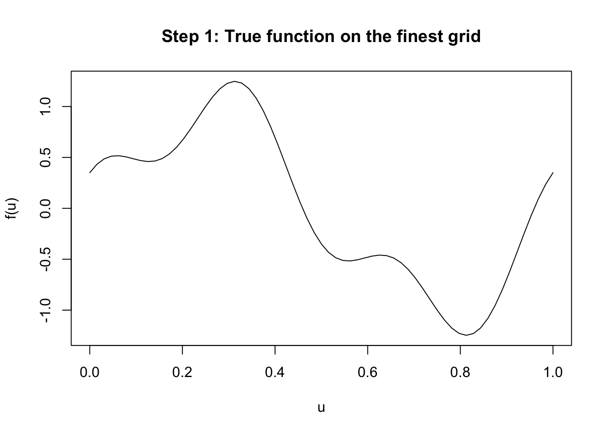
Q_new <- make_RW2_precision(K_new)
image(Q_new != 0,
main = "Step 2: Sparsity pattern of RW2 precision (Q != 0)",
xlab = "index", ylab = "index")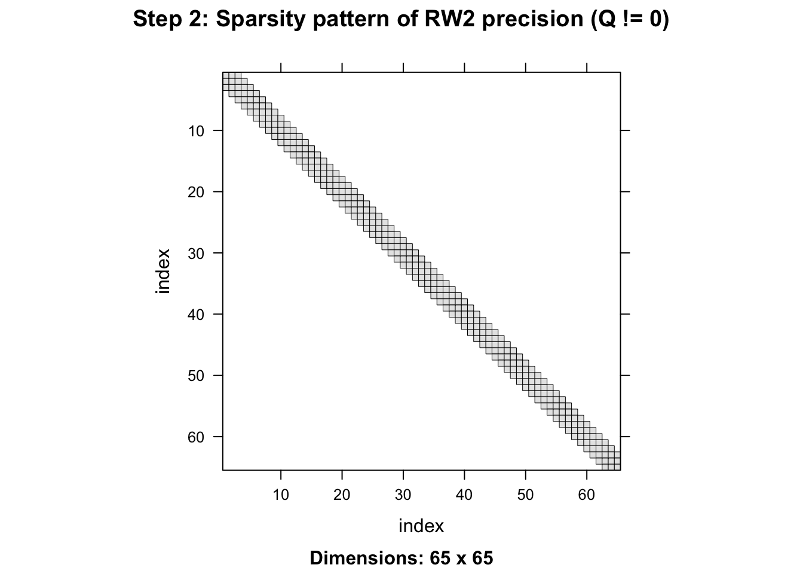
K_old <- 10
u_old <- u_new[seq(1, K_new, length.out = K_old)]
idx_O <- match_locations_to_grid(u_old, u_new)
f_obs <- f_true[idx_O]
plot(u_new, f_true, type = "l",
xlab = "u", ylab = "f(u)",
main = sprintf("Step 3: Observed points (K_old = %d)", K_old))
points(u_new[idx_O], f_obs, pch = 16, cex = 0.9)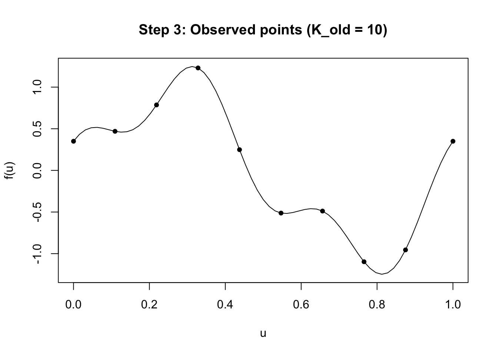
idx_U <- setdiff(seq_len(K_new), idx_O)
Q_UU <- Q_new[idx_U, idx_U]
Q_UO <- Q_new[idx_U, idx_O]
cat("Step 4:\n")Step 4:cat(" |O| =", length(idx_O), "\n") |O| = 10 cat(" |U| =", length(idx_U), "\n") |U| = 55 cat(" dim(Q_UU) =", paste(dim(Q_UU), collapse=" x "), "\n") dim(Q_UU) = 55 x 55 cat(" dim(Q_UO) =", paste(dim(Q_UO), collapse=" x "), "\n") dim(Q_UO) = 55 x 10 image(Q_UU != 0,
main = "Step 4: Sparsity pattern of Q_UU (unknown-unknown block)",
xlab = "U index", ylab = "U index")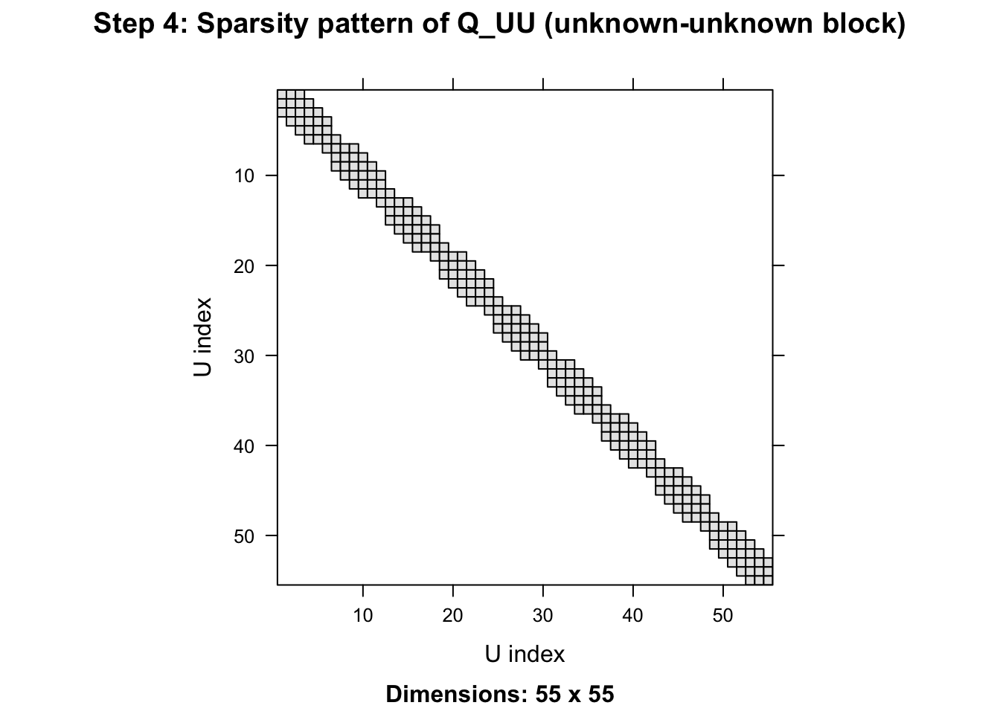
f_hat <- kriging_from_precision(
f_obs = f_obs,
idx_obs = idx_O,
Q_new = Q_new,
nugget = 0,
keep_obs = TRUE
)
plot(u_new, f_true, type = "l",
xlab = "u", ylab = "f(u)",
main = sprintf("Step 5: Conditional mean reconstruction (K_old=%d)", K_old))
lines(u_new, f_hat, lty = 2)
points(u_new[idx_O], f_obs, pch = 16, cex = 0.8)
legend("topright",
legend = c("truth", "kriging mean", "observed"),
lty = c(1,2,NA), pch = c(NA,NA,16), bty = "n")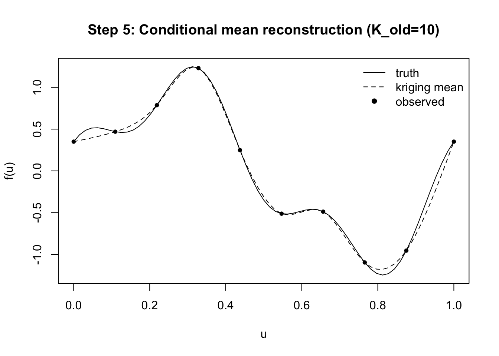
set.seed(1)
source("./code/general_EM.R")
Attaching package: 'matrixStats'The following object is masked from 'package:mclust':
count
Attaching package: 'mvtnorm'The following object is masked from 'package:mclust':
dmvnormsource("./code/prior_precision.R")
source("./code/plot_ordering.R")
load("./data/loading_order/pancreas_factors.rdata")
load("./data/loading_order/pancreas.rdata")
cells <- subsample_cell_types(sample_info$celltype,n = 500)
Loadings <- fl_snmf_ldf$L[cells,c(3,8,9,12,17,18,20,21)]
celltype <- as.character(sample_info$celltype[cells])
names(celltype) <- rownames(Loadings)
batchtype <- as.character(sample_info$tech[cells])
names(batchtype) <- rownames(Loadings)
# --- (A) hierarchical nested grids: K_m = 2^m + 1, and indices are subsets of final grid
make_hierarchical_levels <- function(m_max = 6) {
K_final <- 2^m_max + 1
u_final <- seq(0, 1, length.out = K_final)
idx_levels <- lapply(0:m_max, function(m) {
step <- 2^(m_max - m)
seq(1, K_final, by = step)
})
K_levels <- vapply(idx_levels, length, integer(1))
list(
m_max = m_max,
K_final = K_final,
u_final = u_final,
idx_levels = idx_levels, # list of indices into final grid
K_levels = K_levels # K_m = 2^m + 1
)
}
# --- (B) spacing-aware lambda scaling for RW(q)
# If make_random_walk_precision assumes unit spacing in index space,
# then to keep the continuous roughness penalty comparable across grids:
# lambda_m = lambda_final * (h_final/h_m)^(2q-1) = lambda_final * ((K_m-1)/(K_final-1))^(2q-1)
lambda_scale_for_spacing <- function(lambda_final, K_final, K_level, q = 2) {
if (K_level < 2 || K_final < 2) stop("K_level and K_final must be >= 2")
ratio <- (K_level - 1) / (K_final - 1) # h_final/h_level
lambda_final * (ratio^(2*q - 1))
}
# --- (C) kriging from precision (your version; vectorized over coordinates via matrix RHS)
kriging_from_precision <- function(f_obs, idx_obs, Q_new,
nugget = 0,
keep_obs = TRUE) {
K_new <- nrow(Q_new)
idx_obs <- as.integer(idx_obs)
idx_pred <- setdiff(seq_len(K_new), idx_obs)
if (length(idx_pred) == 0L) {
return(if (keep_obs) f_obs else list(pred_idx = integer(0), f_pred = NULL))
}
if (is.null(dim(f_obs))) f_obs_mat <- matrix(f_obs, ncol = 1) else f_obs_mat <- as.matrix(f_obs)
if (nrow(f_obs_mat) != length(idx_obs)) stop("nrow(f_obs) must equal length(idx_obs).")
Q_UU <- Q_new[idx_pred, idx_pred, drop = FALSE]
Q_UO <- Q_new[idx_pred, idx_obs, drop = FALSE]
if (nugget > 0) Q_UU <- Q_UU + nugget * Diagonal(n = nrow(Q_UU))
rhs <- Q_UO %*% f_obs_mat
f_pred_mat <- - Matrix::solve(Q_UU, rhs)
if (!keep_obs) {
out_pred <- if (ncol(f_pred_mat) == 1) as.numeric(f_pred_mat) else f_pred_mat
return(list(pred_idx = idx_pred, f_pred = out_pred))
}
if (ncol(f_obs_mat) == 1) {
f_full <- numeric(K_new)
f_full[idx_obs] <- f_obs_mat[, 1]
f_full[idx_pred] <- as.numeric(f_pred_mat)
return(f_full)
} else {
p <- ncol(f_obs_mat)
f_full <- matrix(NA_real_, nrow = K_new, ncol = p)
f_full[idx_obs, ] <- f_obs_mat
f_full[idx_pred, ] <- f_pred_mat
return(f_full)
}
}
# --- (D) utility: mu_list (length K_obs) -> Mu_full matrix (K_final x d) + mu_full list
krige_mu_list_to_full_grid <- function(mu_list_obs, u_obs, u_final, Q_final_1d,
nugget = 0) {
idx_obs <- match_locations_to_grid(u_obs, u_final)
Mu_obs <- do.call(rbind, mu_list_obs) # (K_obs x d)
Mu_full <- kriging_from_precision(
f_obs = Mu_obs,
idx_obs = idx_obs,
Q_new = Q_final_1d,
nugget = nugget,
keep_obs = TRUE
)
mu_full_list <- lapply(seq_len(nrow(Mu_full)), function(k) as.numeric(Mu_full[k, ]))
list(Mu_full = Mu_full, mu_full_list = mu_full_list, idx_obs = idx_obs)
}progressive_smoothEM <- function(
data,
m_max = 6,
lambda_final = 500,
q = 2,
ridge = 0,
nugget_kriging = 0,
tol = 1e-3,
max_iter = 1000,
relative_lambda = TRUE,
modelName = "EEI",
coords_show = c(1,2,3),
plot_each_stage = TRUE,
verbose = TRUE
) {
d <- ncol(data)
meta_history <- list()
# 1) hierarchical grids
grid <- make_hierarchical_levels(m_max = m_max)
u_final <- grid$u_final
K_final <- grid$K_final
# 2) final-grid per-coordinate precision for kriging (1D)
Q_final_1d <- make_random_walk_precision(K = K_final, d = 1,
lambda = lambda_final, q = q, ridge = ridge)
# 3) stage 0 init: K=2 using Mclust
u_obs0 <- c(0, 1)
fit0 <- mclust::Mclust(data, G = 2)
mu_list_obs <- list(fit0$parameters$mean[,1], fit0$parameters$mean[,2])
# krige K=2 means to full grid => mu_full_list
kr0 <- krige_mu_list_to_full_grid(mu_list_obs, u_obs0, u_final, Q_final_1d, nugget = nugget_kriging)
mu_full_list <- kr0$mu_full_list
fits <- list()
mu_full_history <- list()
mu_full_history[[1]] <- kr0$Mu_full
meta_history[[1]] <- list(
stage = 0,
u_obs = u_obs0,
mu_obs_list = mu_list_obs,
K_obs = length(u_obs0),
lambda = NA_real_
)
if (plot_each_stage) {
matplot(u_final, kr0$Mu_full[, coords_show, drop = FALSE], type = "l", lty = 1,
xlab = "u", ylab = expression(mu[j](u)),
main = "Stage 0 (K=2): kriged means on final grid")
for (jj in coords_show) points(u_obs0, c(mu_list_obs[[1]][jj], mu_list_obs[[2]][jj]), pch = 16)
}
# 4) for m=1..m_max, fit at K_m = 2^m + 1 (nested by construction)
for (m in 1:m_max) {
idx_fit <- grid$idx_levels[[m + 1]] # +1 because idx_levels includes m=0
u_fit <- u_final[idx_fit]
K_next <- length(u_fit)
# spacing-aware lambda for this level
lambda_next <- lambda_scale_for_spacing(lambda_final, K_final, K_next, q = q)
Q_next <- make_random_walk_precision(K = K_next, d = d,
lambda = lambda_next, q = q, ridge = ridge)
# init params: default init, but overwrite mu with kriged mu_full at these nested locations
init_params <- make_default_init(data, K = K_next)
init_params$mu <- mu_full_list[idx_fit] # nested => directly subset by indices
# rank deficiency for RW separable prior
rank_def <- q * d
if (verbose) {
cat(sprintf("\n[Stage %d] K=%d, lambda_next=%.3g (lambda_final=%.3g)\n",
m, K_next, lambda_next, lambda_final))
}
fit_m <- EM_algorithm(
data = data,
Q_prior = Q_next,
init_params = init_params,
rank_deficiency = rank_def,
max_iter = max_iter,
modelName = modelName,
tol = tol,
relative_lambda = relative_lambda,
verbose = verbose
)
fits[[paste0("K_", K_next)]] <- fit_m
# krige fitted means back to final grid for the next warm start
mu_list_obs <- fit_m$params$mu
kr_m <- krige_mu_list_to_full_grid(mu_list_obs, u_fit, u_final, Q_final_1d, nugget = nugget_kriging)
mu_full_list <- kr_m$mu_full_list
mu_full_history[[m + 1]] <- kr_m$Mu_full
meta_history[[m + 1]] <- list(
stage = m,
u_obs = u_fit,
mu_obs_list = mu_list_obs,
K_obs = K_next,
lambda = lambda_next
)
if (plot_each_stage) {
matplot(u_final, kr_m$Mu_full[, coords_show, drop = FALSE], type = "l", lty = 1,
xlab = "u", ylab = expression(mu[j](u)),
main = sprintf("Stage %d (K=%d): kriged means on final grid", m, K_next))
for (jj in coords_show) {
points(u_fit, sapply(mu_list_obs, function(mu_k) mu_k[jj]), pch = 16)
}
}
}
list(
grid = grid,
Q_final_1d = Q_final_1d,
fits = fits,
mu_full_history = mu_full_history, # each is (K_final x d)
mu_full_list_final = mu_full_list,
meta_history = meta_history
)
}set.seed(1)
res <- progressive_smoothEM(
data = Loadings,
m_max = 6,
lambda_final = 500,
q = 2,
ridge = 0,
nugget_kriging = 0,
tol = 1e-3,
max_iter = 1000,
relative_lambda = TRUE,
coords_show = c(1,2,3),
plot_each_stage = TRUE,
verbose = TRUE
)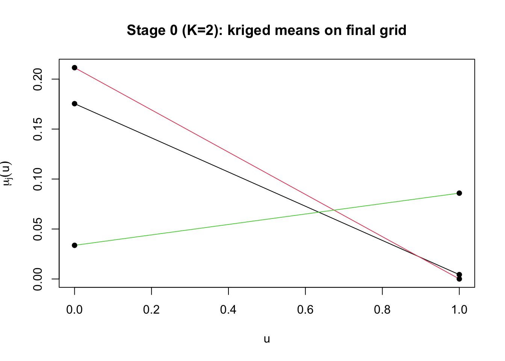
[Stage 1] K=3, lambda_next=0.0153 (lambda_final=500)
Iteration 1: penLogLik = 23642.771629, ELBO = 23637.677244
Iteration 2: penLogLik = 23677.597644, ELBO = 23653.923435
Iteration 3: penLogLik = 23828.754070, ELBO = 23728.393645
Iteration 4: penLogLik = 24323.143877, ELBO = 24024.312546
Iteration 5: penLogLik = 25140.137805, ELBO = 24753.357202
Iteration 6: penLogLik = 25747.276239, ELBO = 25500.090314
Iteration 7: penLogLik = 26159.308379, ELBO = 25981.195044
Iteration 8: penLogLik = 26427.462623, ELBO = 26317.914586
Iteration 9: penLogLik = 26604.391384, ELBO = 26523.317841
Iteration 10: penLogLik = 26793.560359, ELBO = 26693.077952
Iteration 11: penLogLik = 27104.649150, ELBO = 26927.029270
Iteration 12: penLogLik = 27585.903612, ELBO = 27349.146151
Iteration 13: penLogLik = 27871.921754, ELBO = 27793.120646
Iteration 14: penLogLik = 27902.973579, ELBO = 27897.185359
Iteration 15: penLogLik = 27905.646865, ELBO = 27904.894569
Iteration 16: penLogLik = 27906.076571, ELBO = 27905.935688
Iteration 17: penLogLik = 27906.157608, ELBO = 27906.126997
Iteration 18: penLogLik = 27906.172625, ELBO = 27906.165454
Iteration 19: penLogLik = 27906.174581, ELBO = 27906.172838
Iteration 20: penLogLik = 27906.174262, ELBO = 27906.173830
Converged at iteration 20 with ELBO 27906.173830
Final pLoglik: 27906.174262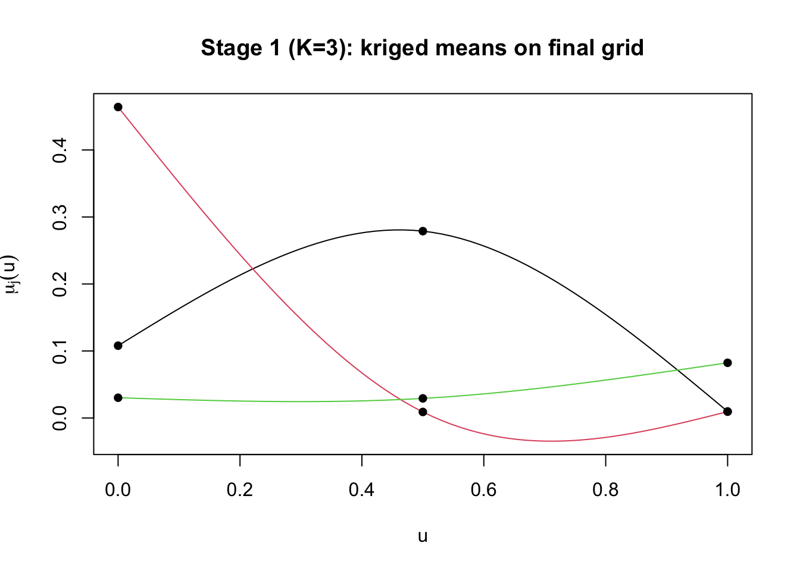
[Stage 2] K=5, lambda_next=0.122 (lambda_final=500)
Iteration 1: penLogLik = 23681.389852, ELBO = 23673.685996
Iteration 2: penLogLik = 23733.678083, ELBO = 23698.112112
Iteration 3: penLogLik = 23959.249689, ELBO = 23810.150490
Iteration 4: penLogLik = 24647.754641, ELBO = 24242.270817
Iteration 5: penLogLik = 25771.326587, ELBO = 25215.505714
Iteration 6: penLogLik = 27135.332646, ELBO = 26477.564639
Iteration 7: penLogLik = 28621.800843, ELBO = 27972.077668
Iteration 8: penLogLik = 29919.034749, ELBO = 29392.369873
Iteration 9: penLogLik = 30821.651388, ELBO = 30452.512207
Iteration 10: penLogLik = 31394.422866, ELBO = 31213.962538
Iteration 11: penLogLik = 31524.609472, ELBO = 31496.573009
Iteration 12: penLogLik = 31535.671248, ELBO = 31533.202062
Iteration 13: penLogLik = 31537.575722, ELBO = 31536.853395
Iteration 14: penLogLik = 31538.399954, ELBO = 31538.052268
Iteration 15: penLogLik = 31538.825266, ELBO = 31538.640651
Iteration 16: penLogLik = 31539.052729, ELBO = 31538.952176
Iteration 17: penLogLik = 31539.175709, ELBO = 31539.120279
Iteration 18: penLogLik = 31539.242422, ELBO = 31539.211625
Iteration 19: penLogLik = 31539.278556, ELBO = 31539.261348
Iteration 20: penLogLik = 31539.297999, ELBO = 31539.288345
Iteration 21: penLogLik = 31539.308331, ELBO = 31539.302899
Iteration 22: penLogLik = 31539.313706, ELBO = 31539.310642
Iteration 23: penLogLik = 31539.316404, ELBO = 31539.314673
Iteration 24: penLogLik = 31539.317678, ELBO = 31539.316698
Iteration 25: penLogLik = 31539.318209, ELBO = 31539.317654
Converged at iteration 25 with ELBO 31539.317654
Final pLoglik: 31539.318209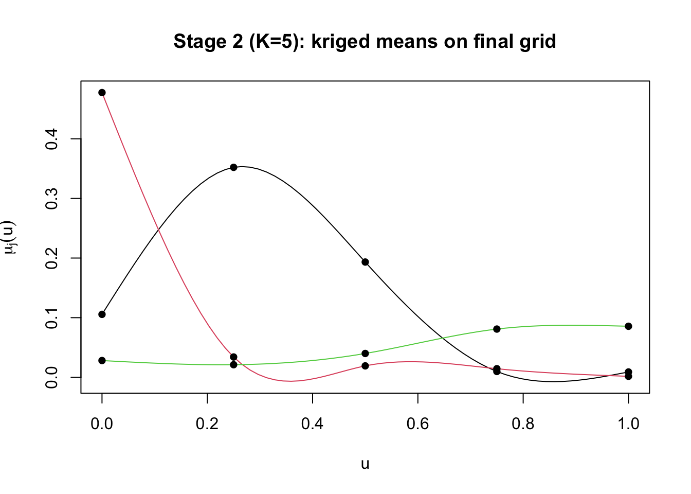
[Stage 3] K=9, lambda_next=0.977 (lambda_final=500)
Iteration 1: penLogLik = 23788.408303, ELBO = 23777.862935
Iteration 2: penLogLik = 23861.140891, ELBO = 23811.541272
Iteration 3: penLogLik = 24172.688374, ELBO = 23967.593150
Iteration 4: penLogLik = 25063.468446, ELBO = 24548.198745
Iteration 5: penLogLik = 26518.360120, ELBO = 25786.581985
Iteration 6: penLogLik = 28406.258725, ELBO = 27509.206079
Iteration 7: penLogLik = 30057.241318, ELBO = 29481.997395
Iteration 8: penLogLik = 30988.320368, ELBO = 30522.811333
Iteration 9: penLogLik = 32160.892719, ELBO = 31757.347537
Iteration 10: penLogLik = 32626.185571, ELBO = 32445.078813
Iteration 11: penLogLik = 32882.418284, ELBO = 32776.123749
Iteration 12: penLogLik = 33082.355148, ELBO = 32990.610610
Iteration 13: penLogLik = 33263.635560, ELBO = 33174.751035
Iteration 14: penLogLik = 33543.689100, ELBO = 33383.280720
Iteration 15: penLogLik = 34149.547381, ELBO = 33796.888857
Iteration 16: penLogLik = 36109.391655, ELBO = 35144.879395
Iteration 17: penLogLik = 37443.381867, ELBO = 37145.866397
Iteration 18: penLogLik = 37588.656321, ELBO = 37557.436840
Iteration 19: penLogLik = 37611.978915, ELBO = 37604.410204
Iteration 20: penLogLik = 37617.605408, ELBO = 37615.782535
Iteration 21: penLogLik = 37618.957674, ELBO = 37618.502431
Iteration 22: penLogLik = 37619.312205, ELBO = 37619.187911
Iteration 23: penLogLik = 37619.409027, ELBO = 37619.374026
Iteration 24: penLogLik = 37619.435230, ELBO = 37619.425298
Iteration 25: penLogLik = 37619.442031, ELBO = 37619.439204
Iteration 26: penLogLik = 37619.443621, ELBO = 37619.442815
Iteration 27: penLogLik = 37619.443889, ELBO = 37619.443659
Converged at iteration 27 with ELBO 37619.443659
Final pLoglik: 37619.443889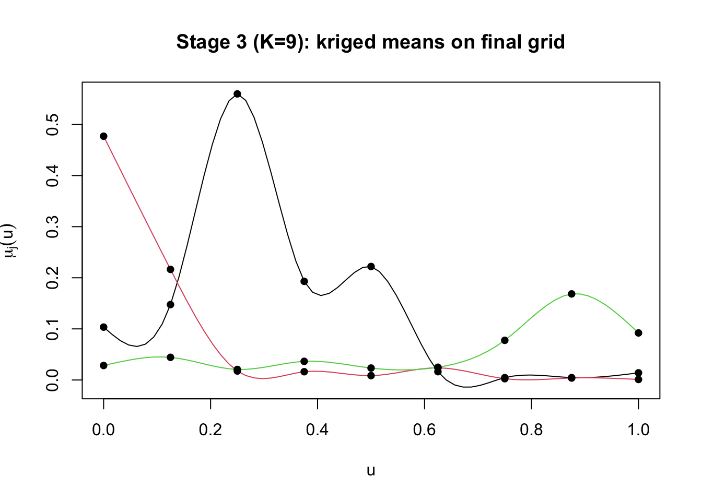
[Stage 4] K=17, lambda_next=7.81 (lambda_final=500)
Iteration 1: penLogLik = 24058.406260, ELBO = 24048.111173
Iteration 2: penLogLik = 24129.162459, ELBO = 24080.876505
Iteration 3: penLogLik = 24436.685431, ELBO = 24232.918072
Iteration 4: penLogLik = 25380.332001, ELBO = 24817.450034
Iteration 5: penLogLik = 27234.189114, ELBO = 26259.999876
Iteration 6: penLogLik = 30115.490919, ELBO = 28632.870826
Iteration 7: penLogLik = 35264.444026, ELBO = 33691.145144
Iteration 8: penLogLik = 37067.958857, ELBO = 36405.694388
Iteration 9: penLogLik = 39082.051622, ELBO = 38175.783692
Iteration 10: penLogLik = 40328.792172, ELBO = 39891.848286
Iteration 11: penLogLik = 40885.805658, ELBO = 40673.654567
Iteration 12: penLogLik = 41145.793009, ELBO = 41041.312994
Iteration 13: penLogLik = 41293.566291, ELBO = 41228.496110
Iteration 14: penLogLik = 41398.368757, ELBO = 41350.647617
Iteration 15: penLogLik = 41482.312115, ELBO = 41443.537065
Iteration 16: penLogLik = 41550.594289, ELBO = 41519.472013
Iteration 17: penLogLik = 41603.888883, ELBO = 41578.209915
Iteration 18: penLogLik = 41651.652799, ELBO = 41628.360597
Iteration 19: penLogLik = 41695.888780, ELBO = 41674.176364
Iteration 20: penLogLik = 41738.471852, ELBO = 41717.451538
Iteration 21: penLogLik = 41780.113130, ELBO = 41759.608416
Iteration 22: penLogLik = 41820.796748, ELBO = 41800.761046
Iteration 23: penLogLik = 41861.382481, ELBO = 41841.218257
Iteration 24: penLogLik = 41903.734211, ELBO = 41882.494697
Iteration 25: penLogLik = 41949.517027, ELBO = 41926.569388
Iteration 26: penLogLik = 41998.523325, ELBO = 41974.452098
Iteration 27: penLogLik = 42045.523197, ELBO = 42023.773980
Iteration 28: penLogLik = 42080.347310, ELBO = 42065.482103
Iteration 29: penLogLik = 42101.140661, ELBO = 42092.297913
Iteration 30: penLogLik = 42113.804460, ELBO = 42108.222804
Iteration 31: penLogLik = 42122.176047, ELBO = 42118.412333
Iteration 32: penLogLik = 42127.927971, ELBO = 42125.325561
Iteration 33: penLogLik = 42131.914025, ELBO = 42130.108871
Iteration 34: penLogLik = 42134.668160, ELBO = 42133.421533
Iteration 35: penLogLik = 42136.563147, ELBO = 42135.705127
Iteration 36: penLogLik = 42137.868286, ELBO = 42137.275913
Iteration 37: penLogLik = 42138.775968, ELBO = 42138.361946
Iteration 38: penLogLik = 42139.419924, ELBO = 42139.124016
Iteration 39: penLogLik = 42139.890737, ELBO = 42139.672362
Iteration 40: penLogLik = 42140.248690, ELBO = 42140.080911
Iteration 41: penLogLik = 42140.533604, ELBO = 42140.398619
Iteration 42: penLogLik = 42140.771899, ELBO = 42140.657850
Iteration 43: penLogLik = 42140.981477, ELBO = 42140.880251
Iteration 44: penLogLik = 42141.175065, ELBO = 42141.080792
Iteration 45: penLogLik = 42141.362591, ELBO = 42141.270552
Iteration 46: penLogLik = 42141.553018, ELBO = 42141.458775
Iteration 47: penLogLik = 42141.756088, ELBO = 42141.654603
Iteration 48: penLogLik = 42141.984430, ELBO = 42141.868930
Iteration 49: penLogLik = 42142.256780, ELBO = 42142.116950
Iteration 50: penLogLik = 42142.603673, ELBO = 42142.422375
Iteration 51: penLogLik = 42143.078313, ELBO = 42142.825225
Iteration 52: penLogLik = 42143.778215, ELBO = 42143.397063
Iteration 53: penLogLik = 42144.888490, ELBO = 42144.271526
Iteration 54: penLogLik = 42146.764050, ELBO = 42145.704369
Iteration 55: penLogLik = 42150.059870, ELBO = 42148.180436
Iteration 56: penLogLik = 42155.833770, ELBO = 42152.551905
Iteration 57: penLogLik = 42165.295654, ELBO = 42160.030935
Iteration 58: penLogLik = 42178.782480, ELBO = 42171.578844
Iteration 59: penLogLik = 42194.670849, ELBO = 42186.620713
Iteration 60: penLogLik = 42210.144143, ELBO = 42202.665846
Iteration 61: penLogLik = 42223.327669, ELBO = 42217.121518
Iteration 62: penLogLik = 42233.930480, ELBO = 42228.971490
Iteration 63: penLogLik = 42242.424481, ELBO = 42238.434666
Iteration 64: penLogLik = 42249.371021, ELBO = 42246.083231
Iteration 65: penLogLik = 42255.199914, ELBO = 42252.421595
Iteration 66: penLogLik = 42260.201966, ELBO = 42257.804464
Iteration 67: penLogLik = 42264.572363, ELBO = 42262.468450
Iteration 68: penLogLik = 42268.447608, ELBO = 42266.575358
Iteration 69: penLogLik = 42271.927038, ELBO = 42270.241015
Iteration 70: penLogLik = 42275.083754, ELBO = 42273.550559
Iteration 71: penLogLik = 42277.970590, ELBO = 42276.566272
Iteration 72: penLogLik = 42280.624299, ELBO = 42279.332379
Iteration 73: penLogLik = 42283.069314, ELBO = 42281.878935
Iteration 74: penLogLik = 42285.321485, ELBO = 42284.225557
Iteration 75: penLogLik = 42287.391693, ELBO = 42286.385148
Iteration 76: penLogLik = 42289.288920, ELBO = 42288.367300
Iteration 77: penLogLik = 42291.022315, ELBO = 42290.180905
Iteration 78: penLogLik = 42292.602101, ELBO = 42291.835626
Iteration 79: penLogLik = 42294.039549, ELBO = 42293.342276
Iteration 80: penLogLik = 42295.346473, ELBO = 42294.712491
Iteration 81: penLogLik = 42296.534635, ELBO = 42295.958138
Iteration 82: penLogLik = 42297.615272, ELBO = 42297.090772
Iteration 83: penLogLik = 42298.598799, ELBO = 42298.121244
Iteration 84: penLogLik = 42299.494667, ELBO = 42299.059497
Iteration 85: penLogLik = 42300.311322, ELBO = 42299.914475
Iteration 86: penLogLik = 42301.056245, ELBO = 42300.694130
Iteration 87: penLogLik = 42301.736030, ELBO = 42301.405482
Iteration 88: penLogLik = 42302.356495, ELBO = 42302.054721
Iteration 89: penLogLik = 42302.922789, ELBO = 42302.647312
Iteration 90: penLogLik = 42303.439507, ELBO = 42303.188112
Iteration 91: penLogLik = 42303.910788, ELBO = 42303.681473
Iteration 92: penLogLik = 42304.340398, ELBO = 42304.131336
Iteration 93: penLogLik = 42304.731790, ELBO = 42304.541304
Iteration 94: penLogLik = 42305.088156, ELBO = 42304.914692
Iteration 95: penLogLik = 42305.412457, ELBO = 42305.254573
Iteration 96: penLogLik = 42305.707446, ELBO = 42305.563801
Iteration 97: penLogLik = 42305.975680, ELBO = 42305.845028
Iteration 98: penLogLik = 42306.219532, ELBO = 42306.100718
Iteration 99: penLogLik = 42306.441196, ELBO = 42306.333153
Iteration 100: penLogLik = 42306.642696, ELBO = 42306.544441
Iteration 101: penLogLik = 42306.825891, ELBO = 42306.736521
Iteration 102: penLogLik = 42306.992485, ELBO = 42306.911173
Iteration 103: penLogLik = 42307.144032, ELBO = 42307.070025
Iteration 104: penLogLik = 42307.281947, ELBO = 42307.214558
Iteration 105: penLogLik = 42307.407515, ELBO = 42307.346123
Iteration 106: penLogLik = 42307.521902, ELBO = 42307.465941
Iteration 107: penLogLik = 42307.626162, ELBO = 42307.575122
Iteration 108: penLogLik = 42307.721248, ELBO = 42307.674668
Iteration 109: penLogLik = 42307.808021, ELBO = 42307.765484
Iteration 110: penLogLik = 42307.887257, ELBO = 42307.848386
Iteration 111: penLogLik = 42307.959657, ELBO = 42307.924114
Iteration 112: penLogLik = 42308.025853, ELBO = 42307.993332
Iteration 113: penLogLik = 42308.086416, ELBO = 42308.056639
Iteration 114: penLogLik = 42308.141860, ELBO = 42308.114578
Iteration 115: penLogLik = 42308.192648, ELBO = 42308.167637
Iteration 116: penLogLik = 42308.239201, ELBO = 42308.216256
Iteration 117: penLogLik = 42308.281896, ELBO = 42308.260835
Iteration 118: penLogLik = 42308.321077, ELBO = 42308.301733
Iteration 119: penLogLik = 42308.357053, ELBO = 42308.339276
Iteration 120: penLogLik = 42308.390104, ELBO = 42308.373758
Iteration 121: penLogLik = 42308.420485, ELBO = 42308.405445
Iteration 122: penLogLik = 42308.448424, ELBO = 42308.434580
Iteration 123: penLogLik = 42308.474132, ELBO = 42308.461381
Iteration 124: penLogLik = 42308.497797, ELBO = 42308.486048
Iteration 125: penLogLik = 42308.519593, ELBO = 42308.508760
Iteration 126: penLogLik = 42308.539675, ELBO = 42308.529683
Iteration 127: penLogLik = 42308.558185, ELBO = 42308.548966
Iteration 128: penLogLik = 42308.575255, ELBO = 42308.566744
Iteration 129: penLogLik = 42308.591003, ELBO = 42308.583142
Iteration 130: penLogLik = 42308.605535, ELBO = 42308.598272
Iteration 131: penLogLik = 42308.618951, ELBO = 42308.612238
Iteration 132: penLogLik = 42308.631340, ELBO = 42308.625133
Iteration 133: penLogLik = 42308.642786, ELBO = 42308.637044
Iteration 134: penLogLik = 42308.653362, ELBO = 42308.648050
Iteration 135: penLogLik = 42308.663139, ELBO = 42308.658221
Iteration 136: penLogLik = 42308.672178, ELBO = 42308.667625
Iteration 137: penLogLik = 42308.680539, ELBO = 42308.676322
Iteration 138: penLogLik = 42308.688273, ELBO = 42308.684366
Iteration 139: penLogLik = 42308.695429, ELBO = 42308.691809
Iteration 140: penLogLik = 42308.702053, ELBO = 42308.698696
Iteration 141: penLogLik = 42308.708185, ELBO = 42308.705072
Iteration 142: penLogLik = 42308.713862, ELBO = 42308.710976
Iteration 143: penLogLik = 42308.719120, ELBO = 42308.716442
Iteration 144: penLogLik = 42308.723991, ELBO = 42308.721505
Iteration 145: penLogLik = 42308.728502, ELBO = 42308.726196
Iteration 146: penLogLik = 42308.732683, ELBO = 42308.730542
Iteration 147: penLogLik = 42308.736557, ELBO = 42308.734569
Iteration 148: penLogLik = 42308.740148, ELBO = 42308.738301
Iteration 149: penLogLik = 42308.743476, ELBO = 42308.741761
Iteration 150: penLogLik = 42308.746562, ELBO = 42308.744968
Iteration 151: penLogLik = 42308.749423, ELBO = 42308.747942
Iteration 152: penLogLik = 42308.752076, ELBO = 42308.750699
Iteration 153: penLogLik = 42308.754536, ELBO = 42308.753256
Iteration 154: penLogLik = 42308.756817, ELBO = 42308.755627
Iteration 155: penLogLik = 42308.758933, ELBO = 42308.757826
Iteration 156: penLogLik = 42308.760895, ELBO = 42308.759866
Iteration 157: penLogLik = 42308.762715, ELBO = 42308.761758
Iteration 158: penLogLik = 42308.764404, ELBO = 42308.763513
Iteration 159: penLogLik = 42308.765970, ELBO = 42308.765141
Iteration 160: penLogLik = 42308.767423, ELBO = 42308.766652
Iteration 161: penLogLik = 42308.768771, ELBO = 42308.768053
Iteration 162: penLogLik = 42308.770021, ELBO = 42308.769353
Iteration 163: penLogLik = 42308.771181, ELBO = 42308.770559
Iteration 164: penLogLik = 42308.772257, ELBO = 42308.771677
Iteration 165: penLogLik = 42308.773254, ELBO = 42308.772715
Iteration 166: penLogLik = 42308.774180, ELBO = 42308.773678
Converged at iteration 166 with ELBO 42308.773678
Final pLoglik: 42308.774180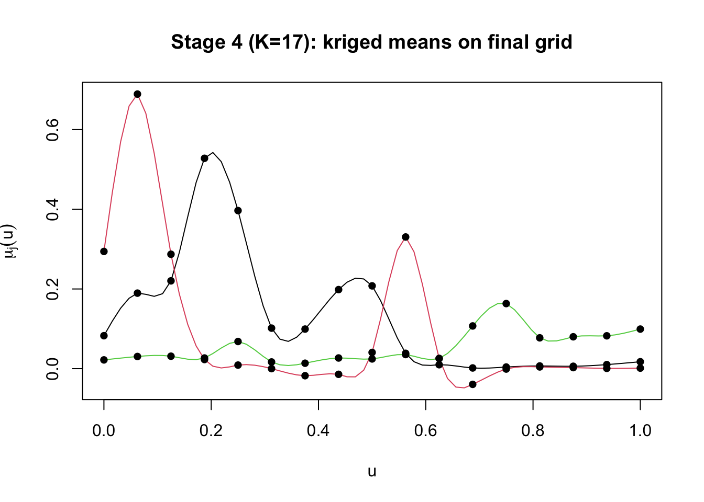
[Stage 5] K=33, lambda_next=62.5 (lambda_final=500)
Iteration 1: penLogLik = 24737.176570, ELBO = 24723.232313
Iteration 2: penLogLik = 24833.598574, ELBO = 24767.718498
Iteration 3: penLogLik = 25244.652918, ELBO = 24974.671101
Iteration 4: penLogLik = 26431.705151, ELBO = 25734.295255
Iteration 5: penLogLik = 29053.720876, ELBO = 27615.250026
Iteration 6: penLogLik = 33580.572245, ELBO = 31911.579757
Iteration 7: penLogLik = 36520.695937, ELBO = 35490.714202
Iteration 8: penLogLik = 38544.342904, ELBO = 37656.676277
Iteration 9: penLogLik = 40276.203756, ELBO = 39570.073903
Iteration 10: penLogLik = 41315.429897, ELBO = 40973.490632
Iteration 11: penLogLik = 41642.638167, ELBO = 41529.330634
Iteration 12: penLogLik = 41815.538162, ELBO = 41732.599905
Iteration 13: penLogLik = 42034.993267, ELBO = 41911.219538
Iteration 14: penLogLik = 42484.870431, ELBO = 42243.790776
Iteration 15: penLogLik = 42930.520270, ELBO = 42763.819377
Iteration 16: penLogLik = 43251.045077, ELBO = 43136.867867
Iteration 17: penLogLik = 43380.014586, ELBO = 43334.742191
Iteration 18: penLogLik = 43442.478139, ELBO = 43414.796384
Iteration 19: penLogLik = 43491.179583, ELBO = 43468.048306
Iteration 20: penLogLik = 43534.739304, ELBO = 43513.807999
Iteration 21: penLogLik = 43574.627624, ELBO = 43555.669400
Iteration 22: penLogLik = 43608.572562, ELBO = 43592.980835
Iteration 23: penLogLik = 43634.724906, ELBO = 43622.758023
Iteration 24: penLogLik = 43656.009728, ELBO = 43645.828684
Iteration 25: penLogLik = 43675.580436, ELBO = 43666.007345
Iteration 26: penLogLik = 43694.142375, ELBO = 43685.078665
Iteration 27: penLogLik = 43711.528882, ELBO = 43703.058607
Iteration 28: penLogLik = 43727.784679, ELBO = 43719.844429
Iteration 29: penLogLik = 43743.223176, ELBO = 43735.627780
Iteration 30: penLogLik = 43758.413282, ELBO = 43750.845761
Iteration 31: penLogLik = 43774.205362, ELBO = 43766.209770
Iteration 32: penLogLik = 43791.760911, ELBO = 43782.716349
Iteration 33: penLogLik = 43812.752498, ELBO = 43801.747039
Iteration 34: penLogLik = 43839.521216, ELBO = 43825.353682
Iteration 35: penLogLik = 43873.115042, ELBO = 43855.820710
Iteration 36: penLogLik = 43907.735732, ELBO = 43891.242869
Iteration 37: penLogLik = 43933.955067, ELBO = 43922.490404
Iteration 38: penLogLik = 43949.745111, ELBO = 43943.020117
Iteration 39: penLogLik = 43959.901706, ELBO = 43955.266204
Iteration 40: penLogLik = 43968.019939, ELBO = 43964.153075
Iteration 41: penLogLik = 43975.097264, ELBO = 43971.696433
Iteration 42: penLogLik = 43981.363794, ELBO = 43978.347407
Iteration 43: penLogLik = 43986.932330, ELBO = 43984.248577
Iteration 44: penLogLik = 43991.902976, ELBO = 43989.502516
Iteration 45: penLogLik = 43996.376349, ELBO = 43994.209396
Iteration 46: penLogLik = 44000.451406, ELBO = 43998.469693
Iteration 47: penLogLik = 44004.219638, ELBO = 44002.379302
Iteration 48: penLogLik = 44007.760822, ELBO = 44006.024066
Iteration 49: penLogLik = 44011.142150, ELBO = 44009.477302
Iteration 50: penLogLik = 44014.418960, ELBO = 44012.800174
Iteration 51: penLogLik = 44017.633384, ELBO = 44016.041907
Iteration 52: penLogLik = 44020.807671, ELBO = 44019.235978
Iteration 53: penLogLik = 44023.932840, ELBO = 44022.390559
Iteration 54: penLogLik = 44026.959651, ELBO = 44025.476916
Iteration 55: penLogLik = 44029.802921, ELBO = 44028.425689
Iteration 56: penLogLik = 44032.364648, ELBO = 44031.140861
Iteration 57: penLogLik = 44034.566956, ELBO = 44033.530124
Iteration 58: penLogLik = 44036.376147, ELBO = 44035.535882
Iteration 59: penLogLik = 44037.805941, ELBO = 44037.149356
Iteration 60: penLogLik = 44038.903552, ELBO = 44038.403757
Iteration 61: penLogLik = 44039.730653, ELBO = 44039.356113
Iteration 62: penLogLik = 44040.348465, ELBO = 44040.069495
Iteration 63: penLogLik = 44040.809737, ELBO = 44040.601567
Iteration 64: penLogLik = 44041.156230, ELBO = 44040.999655
Iteration 65: penLogLik = 44041.419308, ELBO = 44041.300105
Iteration 66: penLogLik = 44041.621772, ELBO = 44041.529698
Iteration 67: penLogLik = 44041.779903, ELBO = 44041.707687
Iteration 68: penLogLik = 44041.905234, ELBO = 44041.847743
Iteration 69: penLogLik = 44042.005940, ELBO = 44041.959542
Iteration 70: penLogLik = 44042.087858, ELBO = 44042.049958
Iteration 71: penLogLik = 44042.155203, ELBO = 44042.123924
Iteration 72: penLogLik = 44042.211069, ELBO = 44042.185029
Iteration 73: penLogLik = 44042.257768, ELBO = 44042.235929
Iteration 74: penLogLik = 44042.297061, ELBO = 44042.278631
Iteration 75: penLogLik = 44042.330317, ELBO = 44042.314676
Iteration 76: penLogLik = 44042.358615, ELBO = 44042.345272
Iteration 77: penLogLik = 44042.382824, ELBO = 44042.371382
Iteration 78: penLogLik = 44042.403653, ELBO = 44042.393786
Iteration 79: penLogLik = 44042.421688, ELBO = 44042.413126
Iteration 80: penLogLik = 44042.437416, ELBO = 44042.429932
Iteration 81: penLogLik = 44042.451252, ELBO = 44042.444655
Iteration 82: penLogLik = 44042.463548, ELBO = 44042.457672
Iteration 83: penLogLik = 44042.474608, ELBO = 44042.469312
Iteration 84: penLogLik = 44042.484696, ELBO = 44042.479856
Iteration 85: penLogLik = 44042.494044, ELBO = 44042.489550
Iteration 86: penLogLik = 44042.502858, ELBO = 44042.498613
Iteration 87: penLogLik = 44042.511319, ELBO = 44042.507238
Iteration 88: penLogLik = 44042.519593, ELBO = 44042.515598
Iteration 89: penLogLik = 44042.527828, ELBO = 44042.523849
Iteration 90: penLogLik = 44042.536159, ELBO = 44042.532133
Iteration 91: penLogLik = 44042.544706, ELBO = 44042.540577
Iteration 92: penLogLik = 44042.553576, ELBO = 44042.549295
Iteration 93: penLogLik = 44042.562865, ELBO = 44042.558388
Iteration 94: penLogLik = 44042.572651, ELBO = 44042.567943
Iteration 95: penLogLik = 44042.582997, ELBO = 44042.578031
Iteration 96: penLogLik = 44042.593947, ELBO = 44042.588706
Iteration 97: penLogLik = 44042.605524, ELBO = 44042.600001
Iteration 98: penLogLik = 44042.617728, ELBO = 44042.611928
Iteration 99: penLogLik = 44042.630534, ELBO = 44042.624474
Iteration 100: penLogLik = 44042.643891, ELBO = 44042.637601
Iteration 101: penLogLik = 44042.657720, ELBO = 44042.651242
Iteration 102: penLogLik = 44042.671919, ELBO = 44042.665307
Iteration 103: penLogLik = 44042.686363, ELBO = 44042.679679
Iteration 104: penLogLik = 44042.700910, ELBO = 44042.694225
Iteration 105: penLogLik = 44042.715405, ELBO = 44042.708794
Iteration 106: penLogLik = 44042.729690, ELBO = 44042.723228
Iteration 107: penLogLik = 44042.743610, ELBO = 44042.737368
Iteration 108: penLogLik = 44042.757020, ELBO = 44042.751063
Iteration 109: penLogLik = 44042.769792, ELBO = 44042.764176
Iteration 110: penLogLik = 44042.781821, ELBO = 44042.776589
Iteration 111: penLogLik = 44042.793028, ELBO = 44042.788210
Iteration 112: penLogLik = 44042.803361, ELBO = 44042.798973
Iteration 113: penLogLik = 44042.812793, ELBO = 44042.808840
Iteration 114: penLogLik = 44042.821324, ELBO = 44042.817799
Iteration 115: penLogLik = 44042.828975, ELBO = 44042.825861
Iteration 116: penLogLik = 44042.835783, ELBO = 44042.833056
Iteration 117: penLogLik = 44042.841799, ELBO = 44042.839430
Iteration 118: penLogLik = 44042.847083, ELBO = 44042.845040
Iteration 119: penLogLik = 44042.851699, ELBO = 44042.849949
Iteration 120: penLogLik = 44042.855715, ELBO = 44042.854223
Iteration 121: penLogLik = 44042.859195, ELBO = 44042.857930
Iteration 122: penLogLik = 44042.862202, ELBO = 44042.861134
Iteration 123: penLogLik = 44042.864795, ELBO = 44042.863896
Iteration 124: penLogLik = 44042.867027, ELBO = 44042.866272
Iteration 125: penLogLik = 44042.868947, ELBO = 44042.868315
Iteration 126: penLogLik = 44042.870598, ELBO = 44042.870069
Iteration 127: penLogLik = 44042.872017, ELBO = 44042.871575
Iteration 128: penLogLik = 44042.873238, ELBO = 44042.872869
Iteration 129: penLogLik = 44042.874289, ELBO = 44042.873980
Iteration 130: penLogLik = 44042.875195, ELBO = 44042.874937
Converged at iteration 130 with ELBO 44042.874937
Final pLoglik: 44042.875195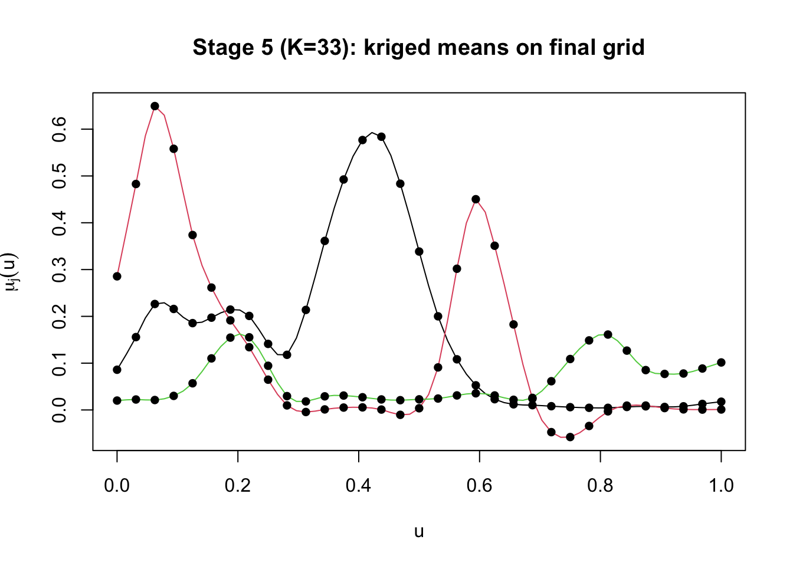
[Stage 6] K=65, lambda_next=500 (lambda_final=500)
Iteration 1: penLogLik = 26345.512338, ELBO = 26332.999486
Iteration 2: penLogLik = 26433.429153, ELBO = 26373.073766
Iteration 3: penLogLik = 26820.028208, ELBO = 26563.968313
Iteration 4: penLogLik = 27952.514005, ELBO = 27287.730547
Iteration 5: penLogLik = 30488.145557, ELBO = 29084.109174
Iteration 6: penLogLik = 35244.502186, ELBO = 33296.593115
Iteration 7: penLogLik = 39128.380005, ELBO = 37630.368094
Iteration 8: penLogLik = 42117.106633, ELBO = 40857.728037
Iteration 9: penLogLik = 44253.268660, ELBO = 43476.903823
Iteration 10: penLogLik = 45468.029979, ELBO = 44977.706718
Iteration 11: penLogLik = 46188.174798, ELBO = 45916.981504
Iteration 12: penLogLik = 46680.304208, ELBO = 46448.879946
Iteration 13: penLogLik = 47014.276935, ELBO = 46891.153490
Iteration 14: penLogLik = 47242.305076, ELBO = 47127.084338
Iteration 15: penLogLik = 47471.320345, ELBO = 47373.628343
Iteration 16: penLogLik = 47595.767391, ELBO = 47546.106425
Iteration 17: penLogLik = 47690.237640, ELBO = 47642.613437
Iteration 18: penLogLik = 47795.580416, ELBO = 47742.332725
Iteration 19: penLogLik = 47888.687763, ELBO = 47849.820596
Iteration 20: penLogLik = 47936.571970, ELBO = 47918.381071
Iteration 21: penLogLik = 47961.212301, ELBO = 47950.580474
Iteration 22: penLogLik = 47979.602759, ELBO = 47970.913379
Iteration 23: penLogLik = 47995.895153, ELBO = 47987.981157
Iteration 24: penLogLik = 48011.542558, ELBO = 48003.782092
Iteration 25: penLogLik = 48027.724111, ELBO = 48019.504498
Iteration 26: penLogLik = 48046.061552, ELBO = 48036.466103
Iteration 27: penLogLik = 48068.505319, ELBO = 48056.643195
Iteration 28: penLogLik = 48094.643551, ELBO = 48081.394572
Iteration 29: penLogLik = 48120.370101, ELBO = 48107.971003
Iteration 30: penLogLik = 48143.344013, ELBO = 48132.443985
Iteration 31: penLogLik = 48162.361457, ELBO = 48153.706855
Iteration 32: penLogLik = 48176.543881, ELBO = 48170.141064
Iteration 33: penLogLik = 48187.482498, ELBO = 48182.383421
Iteration 34: penLogLik = 48196.396882, ELBO = 48192.310489
Iteration 35: penLogLik = 48203.449842, ELBO = 48200.171809
Iteration 36: penLogLik = 48209.420084, ELBO = 48206.573612
Iteration 37: penLogLik = 48214.736378, ELBO = 48212.176475
Iteration 38: penLogLik = 48219.580641, ELBO = 48217.234284
Iteration 39: penLogLik = 48224.065352, ELBO = 48221.882971
Iteration 40: penLogLik = 48228.272683, ELBO = 48226.217062
Iteration 41: penLogLik = 48232.266681, ELBO = 48230.308318
Iteration 42: penLogLik = 48236.100208, ELBO = 48234.214261
Iteration 43: penLogLik = 48239.820046, ELBO = 48237.984002
Iteration 44: penLogLik = 48243.470984, ELBO = 48241.662787
Iteration 45: penLogLik = 48247.099095, ELBO = 48245.295659
Iteration 46: penLogLik = 48250.754049, ELBO = 48248.930318
Iteration 47: penLogLik = 48254.489696, ELBO = 48252.618727
Iteration 48: penLogLik = 48258.361252, ELBO = 48256.416294
Iteration 49: penLogLik = 48262.416374, ELBO = 48260.376394
Iteration 50: penLogLik = 48266.677353, ELBO = 48264.537192
Iteration 51: penLogLik = 48271.115173, ELBO = 48268.898987
Iteration 52: penLogLik = 48275.626262, ELBO = 48273.396986
Iteration 53: penLogLik = 48280.034811, ELBO = 48277.887235
Iteration 54: penLogLik = 48284.138991, ELBO = 48282.170549
Iteration 55: penLogLik = 48287.784195, ELBO = 48286.058465
Iteration 56: penLogLik = 48290.913084, ELBO = 48289.442455
Iteration 57: penLogLik = 48293.560602, ELBO = 48292.316768
Iteration 58: penLogLik = 48295.812055, ELBO = 48294.749113
Iteration 59: penLogLik = 48297.761252, ELBO = 48296.834109
Iteration 60: penLogLik = 48299.487378, ELBO = 48298.660095
Iteration 61: penLogLik = 48301.048732, ELBO = 48300.295703
Iteration 62: penLogLik = 48302.485097, ELBO = 48301.789165
Iteration 63: penLogLik = 48303.822585, ELBO = 48303.172580
Iteration 64: penLogLik = 48305.078116, ELBO = 48304.466800
Iteration 65: penLogLik = 48306.262742, ELBO = 48305.685357
Iteration 66: penLogLik = 48307.383863, ELBO = 48306.837185
Iteration 67: penLogLik = 48308.446609, ELBO = 48307.928370
Iteration 68: penLogLik = 48309.454675, ELBO = 48308.963219
Iteration 69: penLogLik = 48310.410808, ELBO = 48309.944887
Iteration 70: penLogLik = 48311.317103, ELBO = 48310.875752
Iteration 71: penLogLik = 48312.175207, ELBO = 48311.757653
Iteration 72: penLogLik = 48312.986485, ELBO = 48312.592067
Iteration 73: penLogLik = 48313.752180, ELBO = 48313.380271
Iteration 74: penLogLik = 48314.473569, ELBO = 48314.123501
Iteration 75: penLogLik = 48315.152100, ELBO = 48314.823100
Iteration 76: penLogLik = 48315.789501, ELBO = 48315.480644
Iteration 77: penLogLik = 48316.387833, ELBO = 48316.098027
Iteration 78: penLogLik = 48316.949492, ELBO = 48316.677483
Iteration 79: penLogLik = 48317.477164, ELBO = 48317.221569
Iteration 80: penLogLik = 48317.973734, ELBO = 48317.733086
Iteration 81: penLogLik = 48318.442180, ELBO = 48318.214988
Iteration 82: penLogLik = 48318.885471, ELBO = 48318.670267
Iteration 83: penLogLik = 48319.306461, ELBO = 48319.101849
Iteration 84: penLogLik = 48319.707815, ELBO = 48319.512507
Iteration 85: penLogLik = 48320.091943, ELBO = 48319.904786
Iteration 86: penLogLik = 48320.460968, ELBO = 48320.280958
Iteration 87: penLogLik = 48320.816695, ELBO = 48320.642988
Iteration 88: penLogLik = 48321.160610, ELBO = 48320.992521
Iteration 89: penLogLik = 48321.493885, ELBO = 48321.330883
Iteration 90: penLogLik = 48321.817384, ELBO = 48321.659089
Iteration 91: penLogLik = 48322.131695, ELBO = 48321.977859
Iteration 92: penLogLik = 48322.437146, ELBO = 48322.287645
Iteration 93: penLogLik = 48322.733848, ELBO = 48322.588660
Iteration 94: penLogLik = 48323.021721, ELBO = 48322.880912
Iteration 95: penLogLik = 48323.300539, ELBO = 48323.164242
Iteration 96: penLogLik = 48323.569969, ELBO = 48323.438363
Iteration 97: penLogLik = 48323.829609, ELBO = 48323.702901
Iteration 98: penLogLik = 48324.079029, ELBO = 48323.957434
Iteration 99: penLogLik = 48324.317805, ELBO = 48324.201529
Iteration 100: penLogLik = 48324.545551, ELBO = 48324.434778
Iteration 101: penLogLik = 48324.761946, ELBO = 48324.656824
Iteration 102: penLogLik = 48324.966752, ELBO = 48324.867385
Iteration 103: penLogLik = 48325.159828, ELBO = 48325.066269
Iteration 104: penLogLik = 48325.341136, ELBO = 48325.253389
Iteration 105: penLogLik = 48325.510747, ELBO = 48325.428761
Iteration 106: penLogLik = 48325.668831, ELBO = 48325.592507
Iteration 107: penLogLik = 48325.815651, ELBO = 48325.744845
Iteration 108: penLogLik = 48325.951556, ELBO = 48325.886085
Iteration 109: penLogLik = 48326.076962, ELBO = 48326.016609
Iteration 110: penLogLik = 48326.192343, ELBO = 48326.136868
Iteration 111: penLogLik = 48326.298215, ELBO = 48326.247356
Iteration 112: penLogLik = 48326.395120, ELBO = 48326.348606
Iteration 113: penLogLik = 48326.483622, ELBO = 48326.441173
Iteration 114: penLogLik = 48326.564284, ELBO = 48326.525621
Iteration 115: penLogLik = 48326.637670, ELBO = 48326.602516
Iteration 116: penLogLik = 48326.704330, ELBO = 48326.672415
Iteration 117: penLogLik = 48326.764796, ELBO = 48326.735860
Iteration 118: penLogLik = 48326.819578, ELBO = 48326.793373
Iteration 119: penLogLik = 48326.869160, ELBO = 48326.845451
Iteration 120: penLogLik = 48326.913996, ELBO = 48326.892563
Iteration 121: penLogLik = 48326.954513, ELBO = 48326.935150
Iteration 122: penLogLik = 48326.991107, ELBO = 48326.973623
Iteration 123: penLogLik = 48327.024143, ELBO = 48327.008361
Iteration 124: penLogLik = 48327.053959, ELBO = 48327.039718
Iteration 125: penLogLik = 48327.080865, ELBO = 48327.068015
Iteration 126: penLogLik = 48327.105142, ELBO = 48327.093548
Iteration 127: penLogLik = 48327.127049, ELBO = 48327.116587
Iteration 128: penLogLik = 48327.146819, ELBO = 48327.137378
Iteration 129: penLogLik = 48327.164664, ELBO = 48327.156142
Iteration 130: penLogLik = 48327.180778, ELBO = 48327.173082
Iteration 131: penLogLik = 48327.195333, ELBO = 48327.188381
Iteration 132: penLogLik = 48327.208486, ELBO = 48327.202203
Iteration 133: penLogLik = 48327.220378, ELBO = 48327.214697
Iteration 134: penLogLik = 48327.231136, ELBO = 48327.225996
Iteration 135: penLogLik = 48327.240874, ELBO = 48327.236221
Iteration 136: penLogLik = 48327.249696, ELBO = 48327.245480
Iteration 137: penLogLik = 48327.257693, ELBO = 48327.253870
Iteration 138: penLogLik = 48327.264949, ELBO = 48327.261480
Iteration 139: penLogLik = 48327.271537, ELBO = 48327.268386
Iteration 140: penLogLik = 48327.277524, ELBO = 48327.274660
Iteration 141: penLogLik = 48327.282970, ELBO = 48327.280364
Iteration 142: penLogLik = 48327.287929, ELBO = 48327.285555
Iteration 143: penLogLik = 48327.292448, ELBO = 48327.290284
Iteration 144: penLogLik = 48327.296572, ELBO = 48327.294597
Iteration 145: penLogLik = 48327.300338, ELBO = 48327.298534
Iteration 146: penLogLik = 48327.303782, ELBO = 48327.302132
Iteration 147: penLogLik = 48327.306935, ELBO = 48327.305423
Iteration 148: penLogLik = 48327.309824, ELBO = 48327.308438
Iteration 149: penLogLik = 48327.312475, ELBO = 48327.311203
Iteration 150: penLogLik = 48327.314910, ELBO = 48327.313741
Iteration 151: penLogLik = 48327.317151, ELBO = 48327.316074
Iteration 152: penLogLik = 48327.319214, ELBO = 48327.318222
Iteration 153: penLogLik = 48327.321116, ELBO = 48327.320201
Iteration 154: penLogLik = 48327.322873, ELBO = 48327.322028
Iteration 155: penLogLik = 48327.324497, ELBO = 48327.323715
Iteration 156: penLogLik = 48327.326001, ELBO = 48327.325276
Iteration 157: penLogLik = 48327.327394, ELBO = 48327.326722
Iteration 158: penLogLik = 48327.328688, ELBO = 48327.328064
Iteration 159: penLogLik = 48327.329891, ELBO = 48327.329310
Iteration 160: penLogLik = 48327.331010, ELBO = 48327.330469
Iteration 161: penLogLik = 48327.332053, ELBO = 48327.331549
Iteration 162: penLogLik = 48327.333027, ELBO = 48327.332556
Iteration 163: penLogLik = 48327.333936, ELBO = 48327.333496
Converged at iteration 163 with ELBO 48327.333496
Final pLoglik: 48327.333936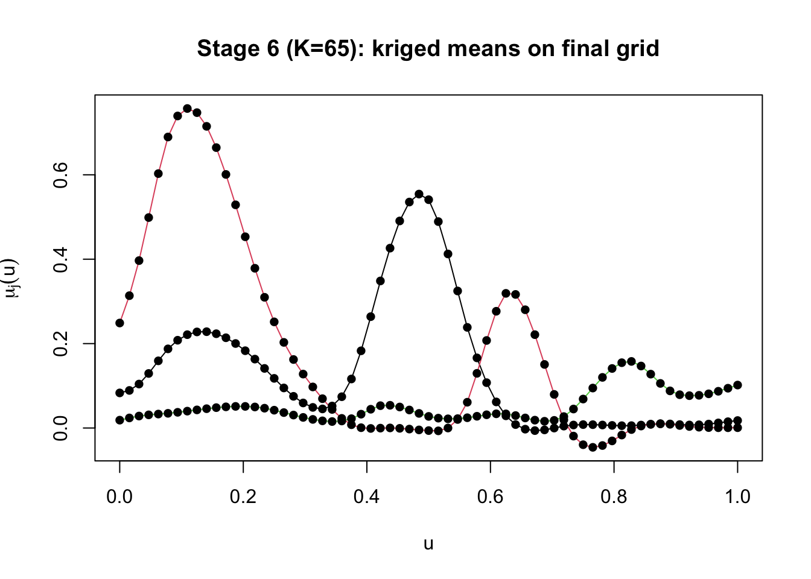
plot_mu_history <- function(mu_full_history,
u_final,
history_i = 1,
coords = c(1, 2, 3),
main = NULL,
xlab = "u (grid position)",
ylab = expression(mu[j](u)),
lty = 1,
add_points = FALSE,
u_obs = NULL,
mu_obs_list = NULL,
res = NULL, # <--- new
pch = 16,
cex = 0.8,
legend_loc = "topright",
legend_prefix = "coord ",
bty = "n") {
if (history_i < 1 || history_i > length(mu_full_history)) {
stop("history_i out of range: must be in 1..length(mu_full_history).")
}
Mu <- mu_full_history[[history_i]]
if (!is.matrix(Mu)) stop("mu_full_history[[history_i]] must be a matrix (K_final x d).")
K_final <- nrow(Mu)
d <- ncol(Mu)
if (length(u_final) != K_final) stop("length(u_final) must equal nrow(Mu).")
coords <- as.integer(coords)
if (any(coords < 1 | coords > d)) stop("coords out of range.")
# if add_points=TRUE and not supplied, try to pull from res$meta_history
if (add_points && (is.null(u_obs) || is.null(mu_obs_list))) {
if (!is.null(res) && !is.null(res$meta_history) &&
history_i <= length(res$meta_history) &&
!is.null(res$meta_history[[history_i]]$u_obs) &&
!is.null(res$meta_history[[history_i]]$mu_obs_list)) {
u_obs <- res$meta_history[[history_i]]$u_obs
mu_obs_list <- res$meta_history[[history_i]]$mu_obs_list
} else {
warning("add_points=TRUE but u_obs/mu_obs_list not provided and res$meta_history missing; skipping points.")
add_points <- FALSE
}
}
# default title: show stage/K/lambda if res provided
if (is.null(main)) {
if (!is.null(res) && !is.null(res$meta_history) && history_i <= length(res$meta_history)) {
mh <- res$meta_history[[history_i]]
if (!is.null(mh$K_obs)) {
lam_txt <- if (!is.null(mh$lambda) && is.finite(mh$lambda)) sprintf(", lambda=%.3g", mh$lambda) else ""
main <- sprintf("history %d (K=%d%s)", history_i, mh$K_obs, lam_txt)
} else {
main <- sprintf("mu_full_history[[%d]] (selected coordinates)", history_i)
}
} else {
main <- sprintf("mu_full_history[[%d]] (selected coordinates)", history_i)
}
}
matplot(u_final,
Mu[, coords, drop = FALSE],
type = "l",
lty = lty,
xlab = xlab,
ylab = ylab,
main = main)
if (add_points) {
# mu_obs_list: list length K_obs, each length-d
for (j in coords) {
yj <- vapply(mu_obs_list, function(mu_k) mu_k[j], numeric(1))
points(u_obs, yj, pch = pch, cex = cex)
}
}
legend(legend_loc,
legend = paste0(legend_prefix, coords),
lty = rep(lty, length(coords)),
bty = bty)
invisible(list(Mu = Mu, coords = coords, history_i = history_i,
u_obs = u_obs, mu_obs_list = mu_obs_list))
}plot_mu_history(res$mu_full_history, res$grid$u_final,
history_i = 3, coords = c(1,2,3),
add_points = TRUE, res = res)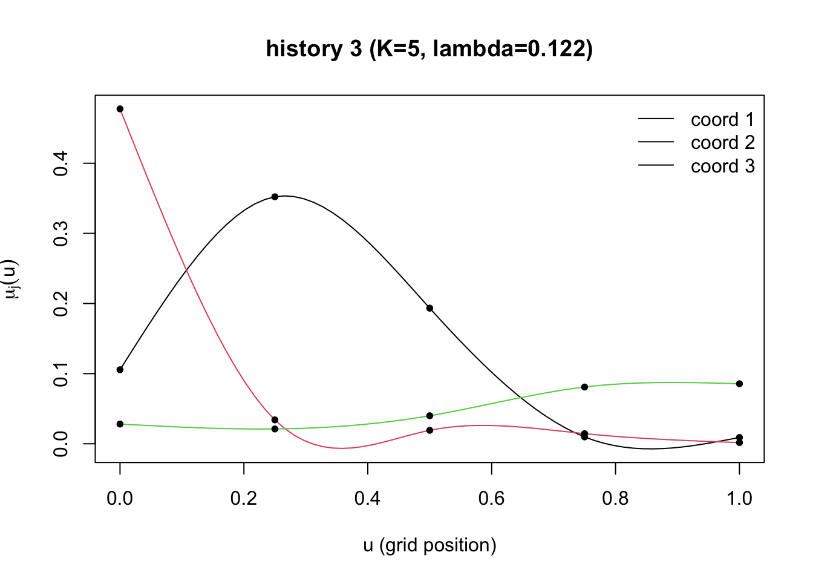
plot_coordinate_change <- function(mu_full_history,
u_final,
coord,
history_i,
history_j,
type = c("both", "overlay", "diff"),
highlight = c("both", "i", "j", "none"),
highlight_u = NULL,
res = NULL,
main = NULL,
xlab = "u (grid position)",
ylab_overlay = expression(mu[j](u)),
ylab_diff = expression(Delta*mu[j](u)),
lty_i = 1,
lty_j = 2,
lty_diff = 1,
pch_i = 16,
pch_j = 17,
pch_diff = 16,
cex_pts = 0.9,
add_zero_line = TRUE,
legend_loc = "topright",
bty = "n",
ylim_overlay = NULL,
pad_ylim = 0.04,
include_highlight_in_ylim = TRUE,
label_points = FALSE) {
type <- match.arg(type)
highlight <- match.arg(highlight)
H <- length(mu_full_history)
if (history_i < 1 || history_i > H) stop("history_i out of range.")
if (history_j < 1 || history_j > H) stop("history_j out of range.")
if (history_i == history_j) stop("history_i and history_j must be different.")
Mu_i <- mu_full_history[[history_i]]
Mu_j <- mu_full_history[[history_j]]
if (!is.matrix(Mu_i) || !is.matrix(Mu_j)) stop("mu_full_history entries must be matrices (K_final x d).")
if (nrow(Mu_i) != nrow(Mu_j)) stop("Different K_final across histories.")
if (length(u_final) != nrow(Mu_i)) stop("length(u_final) must equal nrow(Mu_i).")
d <- ncol(Mu_i)
if (coord < 1 || coord > d) stop("coord out of range.")
yi <- Mu_i[, coord]
yj <- Mu_j[, coord]
dy <- yj - yi
# --- decide highlight u's
get_u_from_res <- function(h) {
if (!is.null(res) && !is.null(res$meta_history) &&
h <= length(res$meta_history) &&
!is.null(res$meta_history[[h]]$u_obs)) {
return(res$meta_history[[h]]$u_obs)
}
NULL
}
u_hi_i <- NULL
u_hi_j <- NULL
if (!is.null(highlight_u)) {
# user-specified: use same set for both
u_hi_i <- highlight_u
u_hi_j <- highlight_u
} else if (highlight %in% c("i", "both")) {
u_hi_i <- get_u_from_res(history_i)
}
if (is.null(highlight_u) && highlight %in% c("j", "both")) {
u_hi_j <- get_u_from_res(history_j)
}
idx_hi_i <- if (!is.null(u_hi_i)) match_locations_to_grid(u_hi_i, u_final) else integer(0)
idx_hi_j <- if (!is.null(u_hi_j)) match_locations_to_grid(u_hi_j, u_final) else integer(0)
# --- default title
if (is.null(main)) {
if (!is.null(res) && !is.null(res$meta_history) &&
history_i <= length(res$meta_history) &&
history_j <= length(res$meta_history)) {
Ki <- res$meta_history[[history_i]]$K_obs
Kj <- res$meta_history[[history_j]]$K_obs
main <- sprintf("coord %d: history %d (K=%s) → history %d (K=%s)",
coord, history_i, ifelse(is.null(Ki), "?", Ki),
history_j, ifelse(is.null(Kj), "?", Kj))
} else {
main <- sprintf("coord %d: history %d → %d", coord, history_i, history_j)
}
}
# --- overlay plot
# --- overlay plot
if (type %in% c("overlay", "both")) {
# ----- compute y-limits for comparability
if (is.null(ylim_overlay)) {
y_all <- c(yi, yj)
if (include_highlight_in_ylim) {
if (length(idx_hi_i) > 0) y_all <- c(y_all, yi[idx_hi_i])
if (length(idx_hi_j) > 0) y_all <- c(y_all, yj[idx_hi_j])
}
rng <- range(y_all, finite = TRUE)
if (!is.finite(rng[1]) || !is.finite(rng[2])) stop("Non-finite values in curves; cannot set ylim.")
if (rng[1] == rng[2]) {
# flat curve: add a small buffer
eps <- ifelse(rng[1] == 0, 1, abs(rng[1])) * 0.05
rng <- rng + c(-eps, eps)
} else {
pad <- diff(rng) * pad_ylim
rng <- rng + c(-pad, pad)
}
ylim_use <- rng
} else {
ylim_use <- ylim_overlay
}
plot(u_final, yi, type = "l", lty = lty_i,
xlab = xlab, ylab = ylab_overlay,
ylim = ylim_use,
main = if (type == "overlay") main else paste0(main, " (overlay)"))
lines(u_final, yj, lty = lty_j)
# highlight points
if (highlight %in% c("i", "both") && length(idx_hi_i) > 0) {
points(u_final[idx_hi_i], yi[idx_hi_i], pch = pch_i, cex = cex_pts)
if (label_points) text(u_final[idx_hi_i], yi[idx_hi_i], labels = idx_hi_i, pos = 3, cex = 0.7)
}
if (highlight %in% c("j", "both") && length(idx_hi_j) > 0) {
points(u_final[idx_hi_j], yj[idx_hi_j], pch = pch_j, cex = cex_pts)
if (label_points) text(u_final[idx_hi_j], yj[idx_hi_j], labels = idx_hi_j, pos = 3, cex = 0.7)
}
legend(legend_loc,
legend = c(paste0("history ", history_i),
paste0("history ", history_j),
if (highlight %in% c("i","both") && length(idx_hi_i)>0) "design pts (i)" else NULL,
if (highlight %in% c("j","both") && length(idx_hi_j)>0) "design pts (j)" else NULL),
lty = c(lty_i, lty_j, rep(NA, 2)),
pch = c(NA, NA,
if (highlight %in% c("i","both") && length(idx_hi_i)>0) pch_i else NULL,
if (highlight %in% c("j","both") && length(idx_hi_j)>0) pch_j else NULL),
bty = bty)
}
# --- difference plot
if (type %in% c("diff", "both")) {
if (type == "both") {
# knitr-friendly approach: open a new plot page
plot.new()
}
plot(u_final, dy, type = "l", lty = lty_diff,
xlab = xlab, ylab = ylab_diff,
main = if (type == "diff") main else paste0(main, " (difference)"))
if (add_zero_line) abline(h = 0, lty = 2)
# highlight same design points on dy
idx_hi <- sort(unique(c(idx_hi_i, idx_hi_j)))
if (length(idx_hi) > 0) {
points(u_final[idx_hi], dy[idx_hi], pch = pch_diff, cex = cex_pts)
if (label_points) text(u_final[idx_hi], dy[idx_hi], labels = idx_hi, pos = 3, cex = 0.7)
}
}
invisible(list(coord = coord, history_i = history_i, history_j = history_j,
mu_i = yi, mu_j = yj, delta = dy,
idx_hi_i = idx_hi_i, idx_hi_j = idx_hi_j))
}plot_coordinate_change(res$mu_full_history, res$grid$u_final,
coord = 5, history_i = 2, history_j = 5,
type = "overlay", highlight = "both", res = res)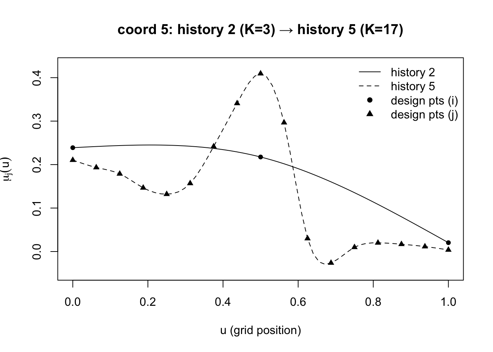
get_history_block <- function(res, h, normalize_gamma = TRUE) {
if (h < 1 || h > length(res$meta_history)) stop("h out of range.")
mh <- res$meta_history[[h]]
if (is.null(mh$K_obs) || is.null(mh$u_obs)) {
stop("res$meta_history[[h]] must contain K_obs and u_obs.")
}
K <- mh$K_obs
u <- mh$u_obs
# ---- get gamma for this history
gamma <- NULL
if (h == 1) {
# stage 0: mclust or stage0 fit
if (!is.null(res$mclust) && !is.null(res$mclust$z)) {
gamma <- res$mclust$z
} else if (!is.null(res$fits$stage0) && !is.null(res$fits$stage0$gamma)) {
gamma <- res$fits$stage0$gamma
} else if (!is.null(res$fit_stage0) && !is.null(res$fit_stage0$z)) {
gamma <- res$fit_stage0$z
} else {
stop("history 1: cannot find membership gamma. Expect res$mclust$z or res$fits$stage0$gamma.")
}
} else {
key <- paste0("K_", K)
if (!is.null(res$fits[[key]]) && !is.null(res$fits[[key]]$gamma)) {
gamma <- res$fits[[key]]$gamma
} else if (!is.null(res$fits_history) && !is.null(res$fits_history[[h]]) && !is.null(res$fits_history[[h]]$gamma)) {
gamma <- res$fits_history[[h]]$gamma
} else {
stop(sprintf("history %d: cannot find gamma. Expected res$fits[['%s']]$gamma (or res$fits_history[[h]]$gamma).", h, key))
}
}
# sanity
if (ncol(gamma) != length(u)) {
stop(sprintf("gamma ncol (%d) != length(u_obs) (%d) at history %d. (order mismatch?)",
ncol(gamma), length(u), h))
}
if (normalize_gamma) gamma <- gamma / rowSums(gamma)
list(h = h, K = K, u = u, gamma = gamma)
}
compare_positions_by_history <- function(res, h1, h2,
type = c("mean", "max"),
add_identity = TRUE,
main = NULL) {
type <- match.arg(type)
b1 <- get_history_block(res, h1, normalize_gamma = TRUE)
b2 <- get_history_block(res, h2, normalize_gamma = TRUE)
if (type == "mean") {
pos1 <- as.numeric(b1$gamma %*% b1$u)
pos2 <- as.numeric(b2$gamma %*% b2$u)
} else {
pos1 <- b1$u[max.col(b1$gamma, ties.method = "first")]
pos2 <- b2$u[max.col(b2$gamma, ties.method = "first")]
}
if (is.null(main)) {
main <- sprintf("%s position: history %d (K=%d) vs history %d (K=%d)",
type, h1, b1$K, h2, b2$K)
}
plot(pos2 ~ pos1,
xlab = sprintf("%s position (h=%d, K=%d)", type, h1, b1$K),
ylab = sprintf("%s position (h=%d, K=%d)", type, h2, b2$K),
main = main)
if (add_identity) abline(0, 1, lty = 3)
abline(lm(pos2 ~ pos1), lty = 2)
invisible(list(pos1 = pos1, pos2 = pos2, cor = cor(pos1, pos2)))
}clust_fit <- mclust::Mclust(Loadings, G = 2)
membership_previous <- clust_fit$z # n x 2
res$mclust <- list(z = membership_previous)
res$meta_history[[1]]$K_obs <- ncol(membership_previous)
res$meta_history[[1]]$u_obs <- c(0, 1)
res$meta_history[[1]]$stage <- 1compare_positions_by_history(res, h1 = 1, h2 = 3, type = "mean")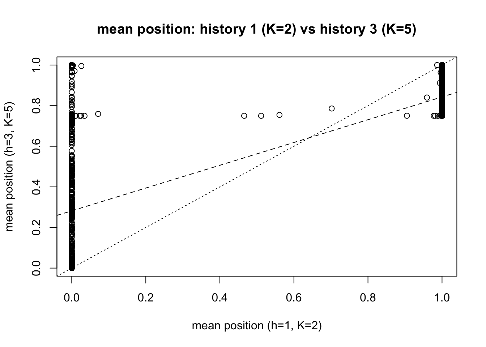
compare_positions_by_history(res, h1 = 1, h2 = 3, type = "max")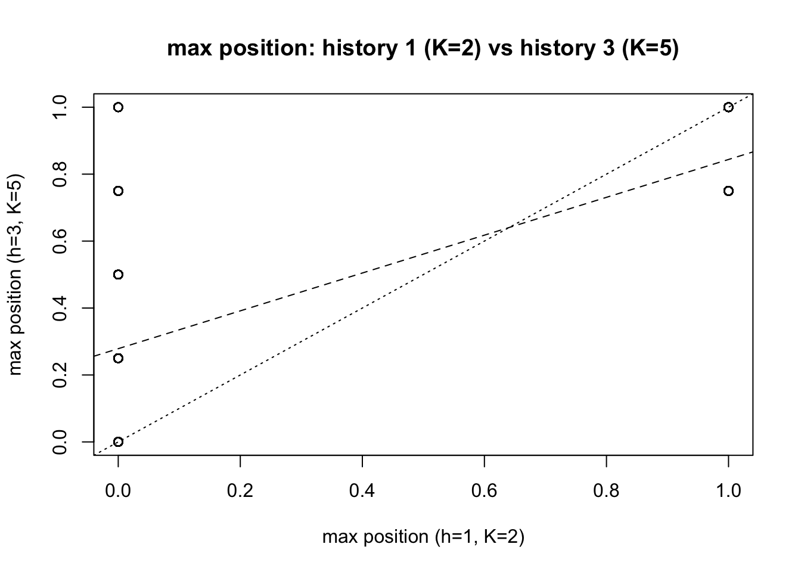
inferred_pos <- res$fits[[length(res$fits)]]$gamma %*% res$grid$u_final
# inferred_pos <- apply(res$fits$K_65$gamma, 1, which.max)
final_order_RW2 <- order(inferred_pos)
plot_structure(Loadings, order = rownames(Loadings)[final_order_RW2])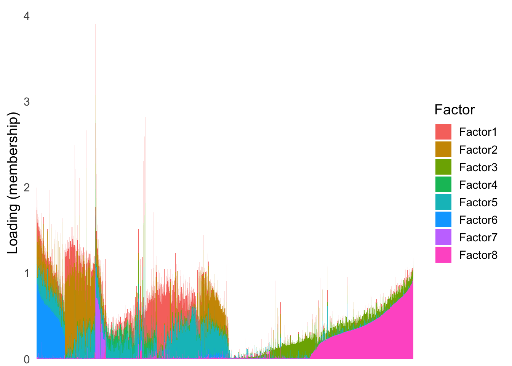
highlights <- unique(celltype)
plot_highlight_types(type_vec = celltype,
subset_types = highlights,
order_vec = rownames(Loadings)[final_order_RW2],
other_color = "white"
)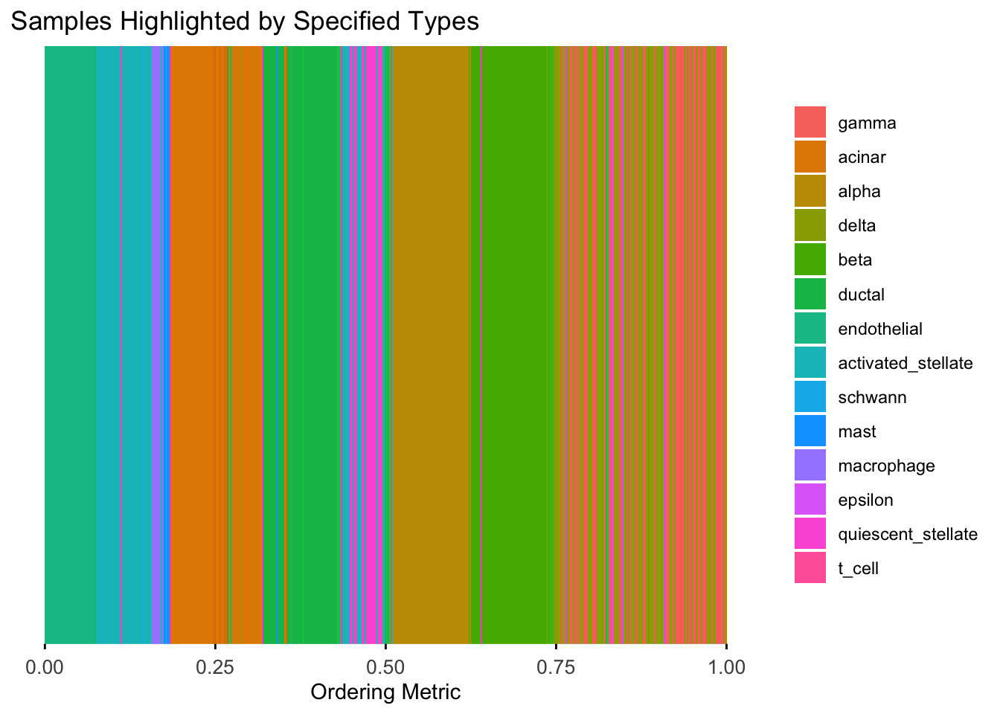
Compare with the result initialized using PCA:
### Smooth-EM with RW2 prior
set.seed(1234)
Q_prior_RW2 <- make_random_walk_precision(K= res$grid$K_final, d=ncol(Loadings), lambda = 500, q=2, ridge = 0)
# Random initialization
# # Initialize based on the other ordering metric
PC1 <- prcomp(Loadings,center = TRUE, scale. = FALSE)$x[,1]
init_params <- make_init(X = Loadings, ordering_vec = -PC1, K = res$grid$K_final)
result_RW2 <- EM_algorithm(
data = Loadings,
Q_prior = Q_prior_RW2,
init_params = init_params,
max_iter = 50,
modelName = "EEI",
tol = 1e-3,
iterate_once = TRUE,
eigen_tol = 0,
rank_deficiency = 2 * ncol(Loadings),
nugget = 0,
relative_lambda = TRUE,
verbose = TRUE
)Iteration 1: penLogLik = 42378.968743, ELBO = 41197.764561
Iteration 2: penLogLik = 43429.055917, ELBO = 43077.112308
Iteration 3: penLogLik = 43888.957070, ELBO = 43698.172203
Iteration 4: penLogLik = 44193.376612, ELBO = 44064.785148
Iteration 5: penLogLik = 44381.467200, ELBO = 44300.905347
Iteration 6: penLogLik = 44490.932978, ELBO = 44445.249507
Iteration 7: penLogLik = 44562.161491, ELBO = 44529.714271
Iteration 8: penLogLik = 44618.429012, ELBO = 44592.272573
Iteration 9: penLogLik = 44662.860944, ELBO = 44642.592073
Iteration 10: penLogLik = 44695.960245, ELBO = 44681.048900
Iteration 11: penLogLik = 44720.377289, ELBO = 44709.276737
Iteration 12: penLogLik = 44739.273679, ELBO = 44730.499840
Iteration 13: penLogLik = 44754.873662, ELBO = 44747.491569
Iteration 14: penLogLik = 44768.415891, ELBO = 44761.927088
Iteration 15: penLogLik = 44780.546545, ELBO = 44774.696784
Iteration 16: penLogLik = 44791.443649, ELBO = 44786.225222
Iteration 17: penLogLik = 44800.743013, ELBO = 44796.376320
Iteration 18: penLogLik = 44808.348108, ELBO = 44804.776106
Iteration 19: penLogLik = 44814.664160, ELBO = 44811.678599
Iteration 20: penLogLik = 44819.993897, ELBO = 44817.467471
Iteration 21: penLogLik = 44824.529436, ELBO = 44822.375110
Iteration 22: penLogLik = 44828.417307, ELBO = 44826.566861
Iteration 23: penLogLik = 44831.774909, ELBO = 44830.173420
Iteration 24: penLogLik = 44834.697350, ELBO = 44833.300244
Iteration 25: penLogLik = 44837.262143, ELBO = 44836.033042
Iteration 26: penLogLik = 44839.532780, ELBO = 44838.441852
Iteration 27: penLogLik = 44841.561517, ELBO = 44840.584180
Iteration 28: penLogLik = 44843.391587, ELBO = 44842.507469
Iteration 29: penLogLik = 44845.059006, ELBO = 44844.251097
Iteration 30: penLogLik = 44846.594087, ELBO = 44845.848015
Iteration 31: penLogLik = 44848.022751, ELBO = 44847.326153
Iteration 32: penLogLik = 44849.367708, ELBO = 44848.709651
Iteration 33: penLogLik = 44850.649552, ELBO = 44850.019999
Iteration 34: penLogLik = 44851.887837, ELBO = 44851.277108
Iteration 35: penLogLik = 44853.102163, ELBO = 44852.500388
Iteration 36: penLogLik = 44854.313337, ELBO = 44853.709863
Iteration 37: penLogLik = 44855.544675, ELBO = 44854.927391
Iteration 38: penLogLik = 44856.823583, ELBO = 44856.178084
Iteration 39: penLogLik = 44858.183611, ELBO = 44857.492097
Iteration 40: penLogLik = 44859.667261, ELBO = 44858.907018
Iteration 41: penLogLik = 44861.329861, ELBO = 44860.471182
Iteration 42: penLogLik = 44863.244593, ELBO = 44862.248155
Iteration 43: penLogLik = 44865.507972, ELBO = 44864.322202
Iteration 44: penLogLik = 44868.242974, ELBO = 44866.803225
Iteration 45: penLogLik = 44871.592762, ELBO = 44869.826567
Iteration 46: penLogLik = 44875.692174, ELBO = 44873.537653
Iteration 47: penLogLik = 44880.603548, ELBO = 44878.046608
Iteration 48: penLogLik = 44886.224668, ELBO = 44883.345723
Iteration 49: penLogLik = 44892.227125, ELBO = 44889.220584
Iteration 50: penLogLik = 44898.113126, ELBO = 44895.238282# hard threshold the gamma matrix to get the clustering
result_RW2$clustering <- apply(result_RW2$gamma, 1, which.max)
loadings_order_RW2 <- order(result_RW2$clustering)
plot_structure(Loadings, order = rownames(Loadings)[loadings_order_RW2])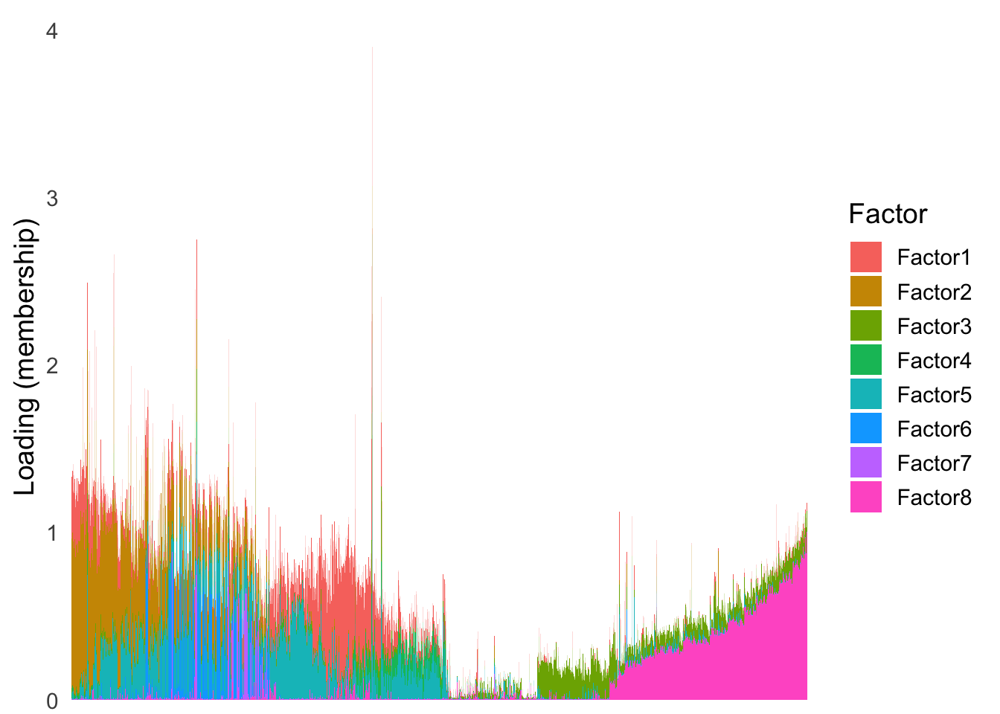
# mean positions
mean_positions_rw2 <- result_RW2$gamma %*% seq(0, 1, length.out = ncol(result_RW2$gamma))
loadings_order_RW2 <- order(mean_positions_rw2)
plot_structure(Loadings, order = rownames(Loadings)[loadings_order_RW2])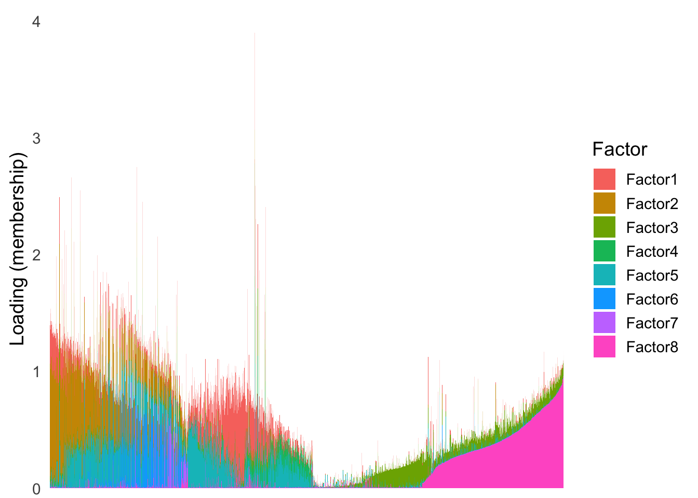
sessionInfo()R version 4.5.1 (2025-06-13)
Platform: aarch64-apple-darwin20
Running under: macOS Sequoia 15.6.1
Matrix products: default
BLAS: /Library/Frameworks/R.framework/Versions/4.5-arm64/Resources/lib/libRblas.0.dylib
LAPACK: /Library/Frameworks/R.framework/Versions/4.5-arm64/Resources/lib/libRlapack.dylib; LAPACK version 3.12.1
locale:
[1] en_US.UTF-8/en_US.UTF-8/en_US.UTF-8/C/en_US.UTF-8/en_US.UTF-8
time zone: America/Toronto
tzcode source: internal
attached base packages:
[1] stats graphics grDevices utils datasets methods base
other attached packages:
[1] ggplot2_4.0.0 mvtnorm_1.3-3 matrixStats_1.5.0 mclust_6.1.2
[5] Matrix_1.7-3 workflowr_1.7.2
loaded via a namespace (and not attached):
[1] tidyr_1.3.1 sass_0.4.10 generics_0.1.4 stringi_1.8.7
[5] lattice_0.22-7 digest_0.6.37 magrittr_2.0.4 evaluate_1.0.5
[9] grid_4.5.1 RColorBrewer_1.1-3 fastmap_1.2.0 rprojroot_2.1.1
[13] jsonlite_2.0.0 processx_3.8.6 whisker_0.4.1 ps_1.9.1
[17] promises_1.3.3 httr_1.4.7 purrr_1.1.0 scales_1.4.0
[21] jquerylib_0.1.4 cli_3.6.5 rlang_1.1.6 withr_3.0.2
[25] cachem_1.1.0 yaml_2.3.10 tools_4.5.1 dplyr_1.1.4
[29] httpuv_1.6.16 vctrs_0.6.5 R6_2.6.1 lifecycle_1.0.4
[33] git2r_0.36.2 stringr_1.5.2 fs_1.6.6 pkgconfig_2.0.3
[37] callr_3.7.6 pillar_1.11.1 bslib_0.9.0 later_1.4.4
[41] gtable_0.3.6 glue_1.8.0 Rcpp_1.1.0 xfun_0.54
[45] tibble_3.3.0 tidyselect_1.2.1 rstudioapi_0.17.1 knitr_1.50
[49] dichromat_2.0-0.1 farver_2.1.2 htmltools_0.5.8.1 labeling_0.4.3
[53] rmarkdown_2.30 compiler_4.5.1 getPass_0.2-4 S7_0.2.0